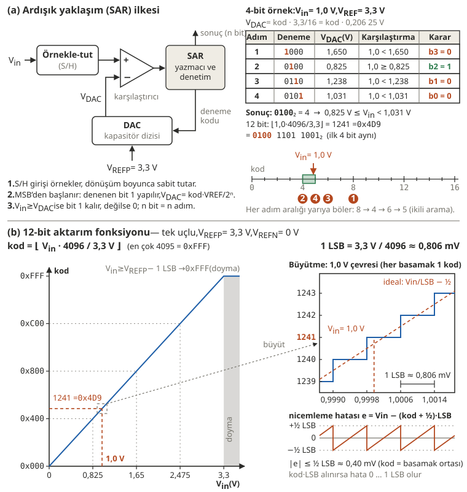
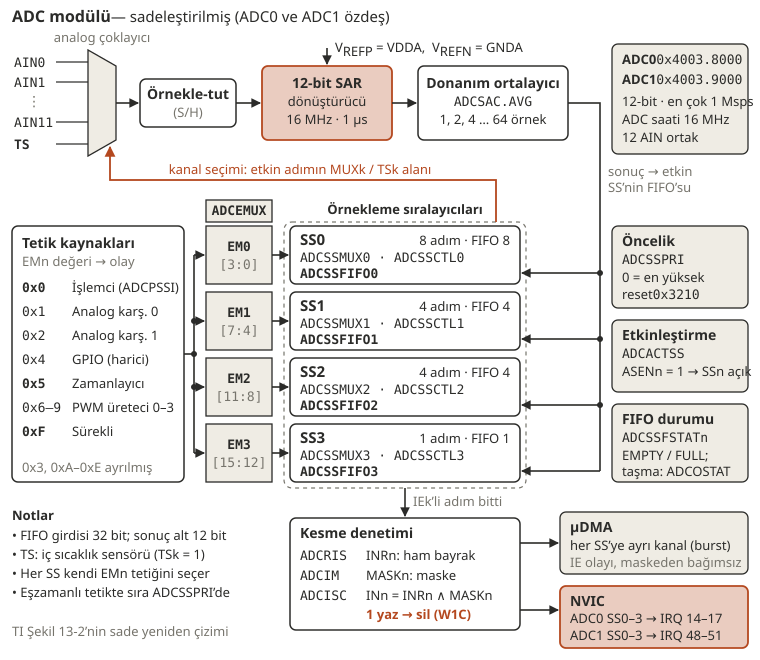
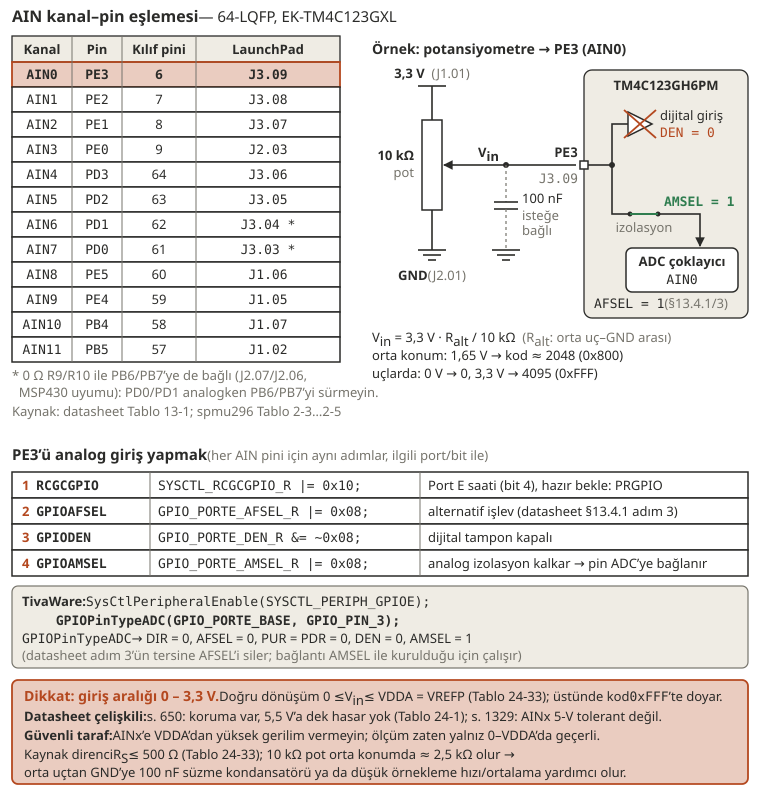
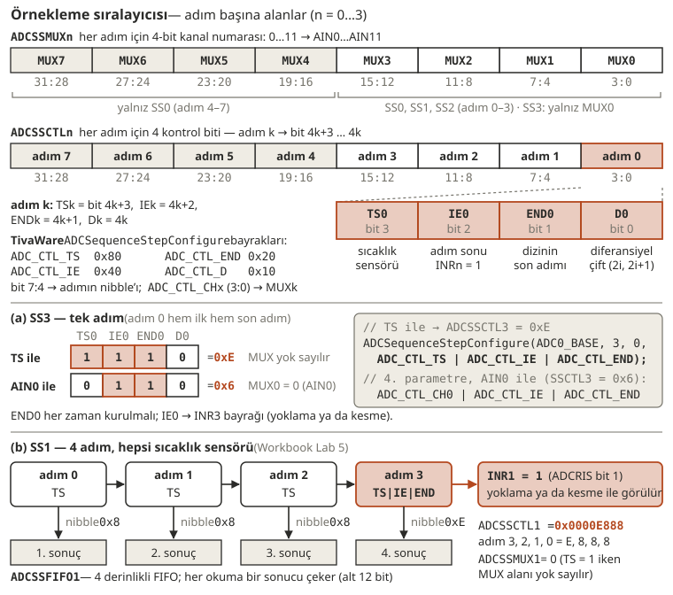
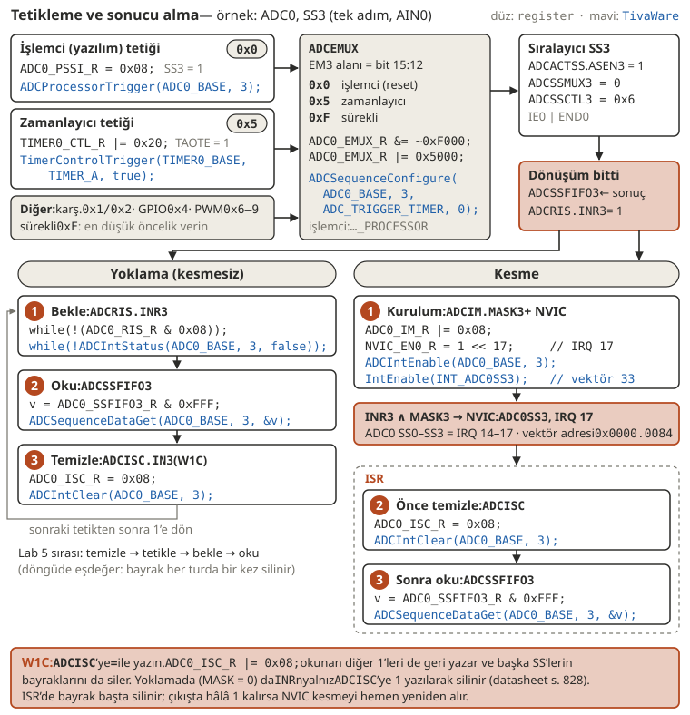
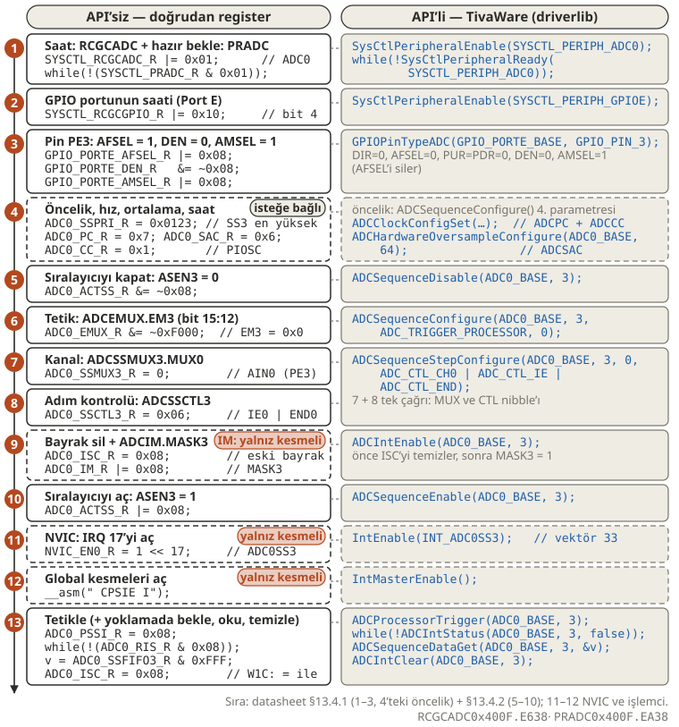

ADC: Analog-Dijital Dönüştürücü
Şimdiye kadar pinleri yalnız 0 ya da 1 olarak okuduk. Sıcaklık, ışık, potansiyometre konumu gibi büyüklükler ise sürekli değişen bir gerilimle temsil edilir. Bu notta TM4C123GH6PM'nin 12-bit ADC'siyle bu gerilimleri sayıya çevireceğiz: önce dönüşümün ilkesini, sonra ADC modülünün "örnekleme sıralayıcısı" düzenini, en sonda da işlemci tetikli, kesmeli ve zamanlayıcı tetikli örnekleri hem register düzeyinde hem TivaWare ile göreceğiz. Kesme altyapısı (NVIC, vektör tablosu, ISR kuralları) Zamanlayıcılar notunda anlatıldığı için burada tekrar edilmiyor.
Bu notun sonunda öğrenci:
- Örnekleme, nicemleme, çözünürlük ve referans gerilimi kavramlarını açıklayabilir; ardışık yaklaşım (SAR) dönüştürücüsünün 12 adımda nasıl sonuca ulaştığını gösterebilir.
- Verilen bir gerilim için ADC kodunu, verilen bir kod için gerilimi ve iç sıcaklık sensörünün kodundan sıcaklığı hesaplayabilir (kod = Vin·4096/3,3; adım ≈ 0,806 mV).
- TM4C123 ADC modülünün yapısını (2 modül, 12 kanal + sıcaklık sensörü, 1 Msps, SS0–SS3 sıralayıcıları ve 8/4/4/1 derinlikli FIFO'lar, donanım ortalayıcı, tetik kaynakları) açıklayabilir.
- Bir AIN pinini analog giriş yapabilir (AFSEL = 1, DEN = 0, AMSEL = 1) ve bir sıralayıcıyı ADCSSMUXn ile ADCSSCTLn (TS, IE, END, D bitleri) üzerinden yapılandırabilir.
- ADC'yi şu sırayla başlatabilir: 1 RCGCADC (+ PRADC bekle) → 2 RCGCGPIO → 3 pin (AFSEL/DEN/AMSEL) → 4 isteğe bağlı modül ayarları (ADCSSPRI, ADCPC, ADCSAC, ADCCC) → 5 ASENn = 0 → 6 ADCEMUX → 7 ADCSSMUXn → 8 ADCSSCTLn → 9 ADCISC + ADCIM → 10 ASENn = 1 → 11 NVIC → 12 global izin → 13 tetik.
- Sonucu yoklama (ADCRIS) ya da kesme (ADCIM → NVIC) ile alabilir, bayrağı ADCISC ile doğru biçimde temizleyebilir ve FIFO'yu boşaltabilir.
- İşlemci tetiğini (ADCPSSI) ve zamanlayıcı tetiğini (ADCEMUX + GPTMCTL.TnOTE) kullanarak aynı uygulamayı doğrudan register erişimiyle ve TivaWare fonksiyonlarıyla (
ADCSequenceConfigure,ADCSequenceStepConfigure,ADCProcessorTrigger,ADCSequenceDataGet,TimerControlTrigger…) yazabilir.
1. Analogdan dijitale
Örnekleme ve nicemleme
Analog bir sinyal zamanda da genlikte de süreklidir. Bir ADC (Analog-to-Digital Converter) bu sinyali iki adımda sayıya çevirir:
- Örnekleme (sampling): Sinyalin değeri belirli anlarda alınır ve dönüşüm süresince sabit tutulur. Bu işi girişteki örnekle-tut (sample-and-hold) devresi yapar. Saniyede alınan örnek sayısına örnekleme hızı denir (TM4C123'te en çok 1 Msps, yani saniyede bir milyon örnek).
- Nicemleme (quantization): Tutulan gerilim, sonlu sayıdaki seviyeden en yakınına yuvarlanır ve bu seviyenin numarası (ADC kodu) çıkış olarak verilir. N bitlik bir ADC'de 2N seviye vardır.
Örnekleme hızı, ölçülecek sinyaldeki en yüksek frekansın en az iki katı olmalıdır (Nyquist ölçütü). Daha yavaş örneklenen hızlı bir sinyal, ölçümde olduğundan düşük frekanslı görünür (örtüşme, aliasing). TM4C123'ün ADC girişinde iç örtüşme önleyici süzgeç yoktur; gerekiyorsa dışarıda bir alçak geçiren süzgeç kullanılır (datasheet s. 1390, Tablo 24-33 notu). Sıcaklık ya da potansiyometre gibi yavaş değişen büyüklüklerde bu sorun pratikte ortaya çıkmaz.
Çözünürlük ve VREF
ADC çıkışını iki referans gerilimine göre üretir: VREFP (üst) ve VREFN (alt). TM4C123GH6PM'de bunlar dışarıdan seçilemez; VREFP analog besleme VDDA'ya, VREFN analog toprak GNDA'ya bağlıdır (datasheet §13.3.4.1, s. 808–809). LaunchPad'de VDDA = 3,3 V olduğundan ölçülebilen aralık 0 – 3,3 V'tur. Tek uçlu (single-ended) kipte 0x000 kodu VREFN'e, 0xFFF kodu VREFP'ye karşılık gelir. Bir kod adımının (1 LSB) gerilim karşılığı:
1 LSB = (VREFP − VREFN) / 4096 = 3,3 V / 4096 ≈ 0,806 mV
Bu, ADC'nin ayırt edebileceği en küçük gerilim farkıdır (çözünürlük). İdeal bir dönüştürücüde yuvarlamadan gelen nicemleme hatası ±½ LSB'dir (≈ ±0,4 mV). Gerçek ADC'nin toplam ayarlanmamış hatası (offset, kazanç ve doğrusalsızlık birlikte) datasheet'te tipik ±10 LSB (≈ ±8 mV), en çok ±30 LSB olarak verilir (s. 1389). Yani 12 bitin son birkaç biti gürültü ve hata payı taşır; donanım ortalaması (Bölüm 2) bu yüzden işe yarar.
Giriş gerilimi 0 V'un altına inerse sonuç 0x000'da, 3,3 V'u aşarsa 0xFFF'de doyar. Doğru sonuç için giriş, VDDA ile GNDA arasında kalmalıdır (s. 809, s. 1389). Datasheet AIN pinlerinin 5 V dayanımı konusunda çelişkilidir: s. 650'de analog sinyaller için iç koruma devresinden söz edilir, s. 1329'da ise AINx sinyallerinin 5 V'a dayanıklı olmadığı yazılır. Güvenli taraf: AINx'e VDDA'dan yüksek gerilim vermeyin; ölçüm yalnız 0–VDDA aralığında geçerlidir.
SAR ilkesi
TM4C123'ün ADC'si ardışık yaklaşım (SAR, Successive Approximation Register) mimarisindedir (datasheet §13.3.4, s. 807). Dönüştürücüde bir örnekle-tut devresi, 12-bit bir DAC (dijitalden analoğa çevirici), bir karşılaştırıcı ve sonucu biriktiren SAR register'ı vardır. TM4C123'te örnekle-tut ve DAC görevlerini aynı anahtarlamalı kondansatör dizisi üstlenir. Dönüşüm bir ikili aramadır (Şekil 1):
- SAR'ın en anlamlı biti (bit11) 1 yapılır; DAC, VREF/2 = 1,65 V üretir.
- Karşılaştırıcı tutulan Vin'i DAC çıkışıyla karşılaştırır: Vin büyükse bit 1 kalır, küçükse 0 yapılır.
- Bir sonraki bit 1 yapılır ve karşılaştırma tekrarlanır. Her adımda aralık yarıya iner.
- 12 karşılaştırmadan sonra SAR'daki sayı ADC kodudur.

Örnek: Vin = 1,000 V, VREF = 3,3 V. Şekil 1'deki 4-bit örnek aynı gerilimin ilk 4 bitini (0100) bulur. 12-bit dönüşümün ilk beş adımı:
| Adım | Denenen bit | DAC gerilimi | Karşılaştırma | Bit sonucu |
|---|---|---|---|---|
| 1 | bit11 | 1,650 V | 1,000 < 1,650 | 0 |
| 2 | bit10 | 0,825 V | 1,000 > 0,825 | 1 |
| 3 | bit9 | 0,825 + 0,4125 = 1,2375 V | 1,000 < 1,2375 | 0 |
| 4 | bit8 | 0,825 + 0,2063 = 1,0313 V | 1,000 < 1,0313 | 0 |
| 5 | bit7 | 0,825 + 0,1031 = 0,9281 V | 1,000 > 0,9281 | 1 |
Kalan yedi adım aynı biçimde sürer ve sonuç 0100 1101 1001 = 0x4D9 = 1241 olur. Bu değer aşağıdaki formülle de doğrulanır. SAR'ın avantajı, dönüşüm süresinin giriş değerinden bağımsız ve sabit olmasıdır. TM4C123'te bir dönüşüm (örnekleme dahil) 1 µs, bunun 250 ns'si örnekleme süresidir (s. 1389).
Dönüşüm formülü ve sayısal örnekler
Tek uçlu kipte (VREFN = 0 V):
kod = ⌊ Vin · 4096 / VREF ⌋ (en çok 4095) · Vin ≈ kod · VREF / 4096
| Yön | Veri | Hesap | Sonuç |
|---|---|---|---|
| Gerilim → kod | 1,65 V | 1,65 · 4096 / 3,3 | 2048 = 0x800 (aralığın ortası) |
| Gerilim → kod | 1,00 V | 1,00 · 1241,2 | 1241 = 0x4D9 |
| Gerilim → kod | 2,50 V | 2,50 · 1241,2 | 3103 = 0xC1F |
| Gerilim → kod | 3,30 V | 4096 olurdu | 4095 = 0xFFF (doyma) |
| Kod → gerilim | 0x9C4 = 2500 | 2500 · 3,3 / 4096 | ≈ 2,014 V |
| Kod → gerilim | 0xC00 = 3072 | 3072 · 3,3 / 4096 | 2,475 V |
| Kod → gerilim | 1 | 3,3 / 4096 | ≈ 0,806 mV (1 LSB) |
Mikrodenetleyicide kayan nokta kullanmadan milivolt hesabı için mV = (kod * 3300) / 4096 yazılır. Çarpma önce yapılır, bölme en sonda; aksi halde tamsayı bölmesi sonucu sıfıra yuvarlar. En büyük ara değer 4095 · 3300 ≈ 13,5 milyon olduğundan 32-bit tamsayıya sığar.
2. TM4C123 ADC modülü
Özellikler
Datasheet Bölüm 13'e göre (s. 799–800) TM4C123GH6PM'de iki özdeş ADC modülü (ADC0, ADC1) vardır. İkisi aynı 12 analog girişi paylaşır ama birbirinden bağımsız çalışır: farklı kanalları farklı tetiklerle örnekleyebilir, ayrı kesmeler üretebilir. Her modülün özellikleri (yapı Şekil 2'de):
- 12-bit çözünürlük, en çok 1 Msps örnekleme hızı.
- 12 analog giriş (AIN0–AIN11) ve bir iç sıcaklık sensörü. Tek uçlu ve fark (differential) girişi.
- Dört örnekleme sıralayıcısı (SS0–SS3), her birinin kendi sonuç FIFO'su.
- Esnek tetikleme: işlemci (yazılım), zamanlayıcılar, analog karşılaştırıcılar, PWM, GPIO ve sürekli örnekleme.
- 2× – 64× donanım ortalaması, 8 dijital karşılaştırıcı, iki modül arasında örnekleme fazı kaydırma (22,5°–337,5°).
- Her sıralayıcı için ayrı μDMA kanalı.

Analog devrelerin beslemesi (VDDA/GNDA) dijital beslemeden ayrıdır. Bu, dijital anahtarlama gürültüsünün ölçüme karışmasını azaltır.
Örnekleme sıralayıcıları ve FIFO'lar
Pek çok mikrodenetleyicide ADC "bir kanal seç, başlat, bitmesini bekle" mantığıyla çalışır. TM4C123'te ise örnekleme, sıralayıcılar (sample sequencer) üzerinden yapılır (datasheet §13.3.1, s. 802). Bir sıralayıcı, arka arkaya alınacak örneklerin listesidir. Her adım (step) için hangi girişin okunacağı ve o adımla ilgili denetim bitleri önceden yazılır. Tetik gelince sıralayıcı bütün adımları işlemciye uğramadan sırayla çalıştırır ve sonuçları kendi FIFO'suna yazar.
| Sıralayıcı | En çok adım | FIFO derinliği | Tipik kullanım |
|---|---|---|---|
| SS0 | 8 | 8 | Çok kanallı tarama (ör. AIN0–AIN7) |
| SS1 | 4 | 4 | Birkaç kanal ya da aynı kanalın 4 örneği (TI Lab 5) |
| SS2 | 4 | 4 | SS1 ile aynı |
| SS3 | 1 | 1 | Tek kanal, tek örnek |
Sıralayıcıların hepsi aynı yapıdadır; yalnız adım sayıları ve FIFO derinlikleri farklıdır (Tablo 13-2, s. 802). Her FIFO girişi 32 bittir ve sonucun 12 biti alttadır. Aynı anda iki sıralayıcının tetiği gelirse hangisinin önce çalışacağını ADCSSPRI belirler: 0 en yüksek, 3 en düşük öncelik; açılışta SS0 = 0 … SS3 = 3'tür. Etkin sıralayıcılara aynı öncelik verilmemelidir (s. 804).
Donanım ortalayıcı: ADCSAC register'ı 2, 4, …, 64 ardışık dönüşümün ortalamasını alıp FIFO'ya tek bir sonuç yazar. Gürültü azalır ama verim aynı oranda düşer: 64× ortalamada 1 Msps'lik dönüştürücü, FIFO'ya saniyede 15 625 sonuç yazar (s. 807). Ortalayıcı tektir, bütün sıralayıcılara aynı oranda uygulanır.
ADC saati ve örnekleme hızı
ADC'nin denetim mantığı 16 MHz'lik bir saatle çalışır (datasheet §13.3.2.6, s. 806; FADC = 16 MHz, s. 1389). Bu saatin kaynağı ADC0'ın ADCCC register'ındaki CS alanıyla seçilir (s. 892) ve iki modül için ortaktır:
- CS = 0x0 (varsayılan): PLL çalışıyorsa PLL çıkışının 25'e bölünmüşü kullanılır: 400 MHz / 25 = 16 MHz. Bu yüzden
SysCtlClockSetile sistem saatini 40 MHz ya da 50 MHz yapan ders örneklerinde ADC saati yine 16 MHz'tir; sistem saatinden bağımsızdır. PLL atlanmışsa (bypass) ADC doğrudan sistem saatini kullanır ve bu saat 16 MHz olmalıdır. - CS = 0x1: ADC saati PIOSC'den (16 MHz iç osilatör) alınır. Bu durumda ADC, işlemci derin uykudayken (Deep-Sleep) de çalışabilir.
Sistem saati ADC saatinden düşük olamaz (s. 806). SysCtlClockSet hiç çağrılmazsa işlemci PIOSC'den 16 MHz'te çalışır, PLL atlanmıştır ve CS = 0 iken ADC bu 16 MHz'i kullanır; bu notun API'siz örnekleri bu varsayılanla çalışır. Datasheet §13.4 ise (s. 817) ADC kullanılırken PLL'in etkin ve desteklenen bir kristal frekansına ayarlı olmasını ister; Tablo 24-21 de (s. 1380) PLL atlandığında sistem saatinin 15,9952–16,0048 MHz aralığında olmasını şart koşar. Fabrika kalibrasyonlu PIOSC'nin doğruluğu ±%3 olduğundan (Tablo 24-15, s. 1375; ±%1 yalnız kullanıcının 7-bit yeniden kalibrasyonu yaptığı koşulda geçerlidir) bu dar aralığı garanti etmez. Laboratuvarda varsayılan saatle sorunsuz ölçüm alınır, ama datasheet'e tam uygunluk ve kesin zamanlama için kristal + PLL kullanılmalıdır (bkz. Timer notu, saat frekansı).
Örnekleme hızı ADCPC register'ının SR alanıyla seçilir: 0x1 125 ksps, 0x3 250 ksps, 0x5 500 ksps, 0x7 1 Msps. Açılış değeri 0x7'dir (s. 891). TI Lab 5 de varsayılan 1 Msps ile çalışır. Örnekleri belirli aralıklarla almak için ise hız ayarı değil, zamanlayıcı tetiği kullanılır (Bölüm 6). Datasheet'e göre tetikten dönüşümün başlamasına kadar 2 ADC saati geçer (s. 1389).
3. Analog girişler ve pin ayarı
AIN kanal–pin eşlemesi
AIN girişleri bazı GPIO pinlerinin analog işlevidir (datasheet Tablo 13-1, s. 801–802). Kanal numarası ADCSSMUXn alanına ya da TivaWare'deki ADC_CTL_CHn sabitine yazılan sayıdır:
| Kanal | Pin | Kılıf pini | Kanal | Pin | Kılıf pini |
|---|---|---|---|---|---|
| AIN0 | PE3 | 6 | AIN6 | PD1 | 62 |
| AIN1 | PE2 | 7 | AIN7 | PD0 | 61 |
| AIN2 | PE1 | 8 | AIN8 | PE5 | 60 |
| AIN3 | PE0 | 9 | AIN9 | PE4 | 59 |
| AIN4 | PD3 | 64 | AIN10 | PB4 | 58 |
| AIN5 | PD2 | 63 | AIN11 | PB5 | 57 |

LaunchPad'de: Kartta hazır bir analog kaynak (potansiyometre, ışık sensörü) yoktur; bu notun örneklerinde PE3'e dışarıdan bir potansiyometre bağlanır (Şekil 3). Kart kılavuzuna göre (SPMU296, s. 10) PE3, J3 konnektörünün 9. pini; 3,3 V J1'in 1. pini; GND J2'nin 1. ya da J3'ün 2. pinidir. 10 kΩ'luk bir potansiyometrenin uçları 3,3 V ve GND'ye, orta ucu PE3'e bağlanır. Dikkat: PD0 (AIN7) ve PD1 (AIN6) kartta 0 Ω dirençlerle (R9, R10) PB6 ve PB7'ye bağlıdır (MSP430 BoosterPack uyumluluğu için, SPMU296 Tablo 2-4/2-5). Bu iki kanal kullanılacaksa PB6/PB7 çıkış yapılmamalı ya da dirençler sökülmelidir.
Datasheet, girişi süren kaynağın direncini en çok 500 Ω olarak verir (RS, s. 1389); ADC'nin örnekleme kondansatörü 250 ns içinde bu direnç üzerinden dolar. Potansiyometrenin orta ucunun iç direnci 2,5 kΩ'a kadar çıkabildiğinden hassas ölçümde pine yakın bir kondansatör (ör. 100 nF) ya da bir tampon (op-amp izleyici) sonucu iyileştirir. Bu genel bir uygulama önerisidir; datasheet yalnız RS ≤ 500 Ω şartını verir. 100 nF, 10 pF'lık örnekleme kapasitesine (CADC, s. 1389) yük aktarırken gerilimi pek düşürmez; potansiyometreyle oluşan zaman sabiti (2,5 kΩ · 100 nF = 250 µs) yavaş değişen bir ayar için sorun değildir.
Pinin analog giriş yapılması
Datasheet §13.2 ve §13.4.1'e göre (s. 801, 817) bir AIN pini için GPIO tarafında şu ayarlar yapılır (GPIO register'ları için bkz. GPIO notu, register tablosu):
| Register | PE3 için değer | Neden |
|---|---|---|
| RCGCGPIO | bit4 = 1 | Port E saatini aç (Port A … F = bit0 … bit5). |
| GPIODIR | bit3 = 0 | Giriş (açılış değeri zaten 0). |
| GPIOAFSEL | bit3 = 1 | Pin GPIO değil, çevre birimi işlevinde (datasheet §13.4.1 adım 3). |
| GPIODEN | bit3 = 0 | Dijital giriş tamponu kapalı (datasheet §13.4.1 adım 4). |
| GPIOAMSEL | bit3 = 1 | Analog yalıtım devresi devre dışı: pin ADC'ye bağlanır (datasheet §13.4.1 adım 5). |
GPIOPCTL'ye yazılmaz; AIN işlevi PCTL ile seçilmez, AMSEL ile bağlanır. TivaWare'deki GPIOPinTypeADC(GPIO_PORTE_BASE, GPIO_PIN_3) bu işi tek çağrıda yapar. TivaWare 2.1.4 kaynağına göre bu fonksiyon iki çağrıdan oluşur: GPIODirModeSet(..., GPIO_DIR_MODE_IN) (DIR = 0, AFSEL = 0) ve GPIOPadConfigSet(..., GPIO_PIN_TYPE_ANALOG) (pull-up/pull-down = 0, DEN = 0, AMSEL = 1). Yani API AFSEL'i 0 bırakır, datasheet §13.4.1 ise AFSEL = 1 ister. Bağlantı AMSEL ile kurulduğundan API yolu pratikte çalışır; API'siz kodda datasheet sırası (AFSEL = 1) izlenir.
İç sıcaklık sensörü bir pine bağlı değildir; yalnız onu okuyan bir uygulamada GPIO ayarı (adım 2–3) gerekmez.
İç sıcaklık sensörü
Yonga içindeki sıcaklık sensörü, sıcaklıkla doğrusal değişen bir gerilim üretir (datasheet §13.3.6, s. 812–813):
VTSENS = 2,7 − (TEMP + 55) / 75 (TEMP: °C)
Eğim −1/75 V/°C ≈ −13,3 mV/°C'dir; 25 °C'de VTSENS = 1,633 V, −40 °C'de 2,5 V, 85 °C'de 0,833 V'tur. Sıcaklık arttıkça gerilim ve dolayısıyla ADC kodu azalır. Gerilim yerine ADC kodu kullanılırsa (VREF = VREFP − VREFN):
TEMP = 147,5 − (75 · VREF · kod) / 4096 ⇒ VREF = 3,3 V için TEMP = 147,5 − 247,5 · kod / 4096
İki formül birbirinin aynısıdır: ilkinden TEMP = 75·(2,7 − V) − 55 = 147,5 − 75·V bulunur ve V = 3,3·kod/4096 yazılır. Tamsayı aritmetiğinde ondalık kaybolmasın diye TI Lab 5 ve ders kodları her şeyi 10 ile çarpar:
TempC = (1475 - (2475 * kod) / 4096) / 10; // 147,5 ve 247,5 değerleri 10 ile çarpıldı
TempF = ((TempC * 9) + 160) / 5; // F = C*9/5 + 32| Veri | Hesap | Sonuç |
|---|---|---|
| kod = 2027 | 147,5 − 247,5 · 2027 / 4096 = 147,5 − 122,48 | ≈ 25,0 °C (tamsayı formülü: 25) |
| kod = 1800 | 147,5 − 108,76 | ≈ 38,7 °C (tamsayı formülü: 38) |
| TEMP = 50 °C | V = 2,7 − 105/75 = 1,3 V → 1,3 · 4096 / 3,3 | kod ≈ 1614 |
| TEMP = 30 °C | V = 2,7 − 85/75 ≈ 1,567 V | kod ≈ 1944: 30 °C'nin üstü ⇔ kod ≤ 1944 |
Sensörün kendi doğruluğu ±5 °C'dir (ADC hatası hariç, s. 1390); TI kitapçığı da sensörün kalibre edilmediğini, deneyde mutlak değerden çok değişimin izlenmesi gerektiğini belirtir. Sensör, sıralayıcı adımında TSn biti 1 yapılarak okunur (Bölüm 5); TSn = 1 iken o adımın ADCSSMUXn alanı kullanılmaz.
Formüldeki 2475 * kod / 4096 değeri 1475'i aşarsa (kod > 2441, yani yaklaşık 0 °C'nin altı) çıkarma negatif olur. Sonuç uint32_t bir değişkene yazılıyorsa çok büyük bir pozitif sayıya döner. Soğuk ortamda ölçüm yapılacaksa hesap int32_t ile yapılmalıdır.
4. Register'lar ve taban adresler
Taban adresler ve saat register'ları
Her ADC modülünün 4 KB'lık bir adres penceresi vardır; register adresi taban + ofset'tir (datasheet §13.5, s. 818). TivaWare adları inc/hw_memmap.h dosyasındadır.
| Modül | Taban adres | TivaWare adı |
|---|---|---|
| ADC0 | 0x40038000 | ADC0_BASE |
| ADC1 | 0x40039000 | ADC1_BASE |
| Register | Adres | Görev | Datasheet |
|---|---|---|---|
| RCGCADC | 0x400FE638 (SYSCTL + 0x638) | ADC modüllerinin saatini açar: bit0 = ADC0, bit1 = ADC1. | s. 352 |
| PRADC | 0x400FEA38 (SYSCTL + 0xA38) | Salt okunur; bit = 1 ise modül erişime hazır. | s. 418 |
Saat açıldıktan sonra ADC register'larına erişmeden önce 3 sistem saati beklenmelidir (s. 818). Saati kapalı modülün register'ına erişmek bus fault üretir (s. 352); bu durumda program startup dosyasındaki FaultISR'de takılır.
ADC register tablosu
Ofsetler modül taban adresine eklenir (datasheet Tablo 13-4, s. 818–820). Son sütun ADC0 için inc/tm4c123gh6pm.h adıdır.
| Register | Ofset | Görev | tm4c123gh6pm.h (ADC0) | Datasheet |
|---|---|---|---|---|
| ADCACTSS | 0x000 | Sıralayıcıları etkinleştirir (ASEN0–3); BUSY biti. | ADC0_ACTSS_R | s. 821 |
| ADCRIS | 0x004 | Ham kesme durumu (salt okunur): INRn = 1 ise SSn'de IE'li bir adım bitti. Yoklama bunu okur. | ADC0_RIS_R | s. 823 |
| ADCIM | 0x008 | Kesme maskesi: MASKn = 1 ise INRn kesme olarak NVIC'e gider. | ADC0_IM_R | s. 825 |
| ADCISC | 0x00C | Kesme durumu ve temizleme (RW1C): okununca INRn AND MASKn; INn'ye 1 yazmak INRn'yi temizler. | ADC0_ISC_R | s. 828 |
| ADCOSTAT | 0x010 | FIFO taşma (overflow) bayrakları (RW1C). | ADC0_OSTAT_R | s. 831 |
| ADCEMUX | 0x014 | Her sıralayıcının tetik kaynağı (EM0–EM3, 4'er bit). | ADC0_EMUX_R | s. 833 |
| ADCUSTAT | 0x018 | FIFO alttan taşma (underflow) bayrakları (RW1C). | ADC0_USTAT_R | s. 838 |
| ADCSSPRI | 0x020 | Sıralayıcı öncelikleri (açılış 0x3210). | ADC0_SSPRI_R | s. 841 |
| ADCPSSI | 0x028 | İşlemci tetiği: SSn bitine 1 yazmak SSn'yi başlatır. Okuması anlamlı değildir. | ADC0_PSSI_R | s. 845 |
| ADCSAC | 0x030 | Donanım ortalaması: AVG (bit2:0), 2AVG örnek (0–6). | ADC0_SAC_R | s. 847 |
| ADCCTL | 0x038 | Referans seçimi (yalnız VDDA/GNDA) ve DITHER (bit6). | ADC0_CTL_R | s. 850 |
| ADCSSMUX0 | 0x040 | SS0 adımlarının giriş seçimi (MUX0–MUX7). | ADC0_SSMUX0_R | s. 851 |
| ADCSSCTL0 | 0x044 | SS0 adımlarının denetim bitleri (Dn, ENDn, IEn, TSn). | ADC0_SSCTL0_R | s. 853 |
| ADCSSFIFO0 | 0x048 | SS0 sonuç FIFO'su (okumak bir sonucu çeker). | ADC0_SSFIFO0_R | s. 860 |
| ADCSSFSTAT0 | 0x04C | SS0 FIFO durumu: EMPTY, FULL, baş/kuyruk işaretçileri. | ADC0_SSFSTAT0_R | s. 861 |
| ADCSSMUX1 / SSCTL1 / SSFIFO1 / SSFSTAT1 | 0x060 / 0x064 / 0x068 / 0x06C | SS1 için aynı dört register (4 adım). | ADC0_SSMUX1_R … | s. 860–868 |
| ADCSSMUX2 / SSCTL2 / SSFIFO2 / SSFSTAT2 | 0x080 / 0x084 / 0x088 / 0x08C | SS2 için aynı dört register (4 adım). | ADC0_SSMUX2_R … | s. 860–868 |
| ADCSSMUX3 / SSCTL3 / SSFIFO3 / SSFSTAT3 | 0x0A0 / 0x0A4 / 0x0A8 / 0x0AC | SS3 için aynı dört register (1 adım). | ADC0_SSMUX3_R … | s. 860–876 |
| ADCPP | 0xFC0 | Özellikler (salt okunur): 12 kanal, 12 bit, 1 Msps, sıcaklık sensörü var. | ADC0_PP_R | s. 889 |
| ADCPC | 0xFC4 | Örnekleme hızı: SR (bit3:0) = 0x1/0x3/0x5/0x7 → 125k/250k/500k/1M sps. | ADC0_PC_R | s. 891 |
| ADCCC | 0xFC8 | ADC saat kaynağı: CS (bit3:0) = 0x0 PLL/25 ya da 16 MHz sistem saati, 0x1 PIOSC. | ADC0_CC_R | s. 892 |
Sıralayıcı register'ları 0x20'lik adımlarla tekrar eder: SSn grubunun başlangıcı 0x040 + 0x20·n'dir. Dijital karşılaştırıcı register'ları (ADCSSOPn, ADCSSDCn, ADCDCCTLn, ADCDCCMPn) bu notun konusu değildir.
Sık kullanılan bitler
| Register | Bit | Ad | Anlamı |
|---|---|---|---|
| ADCACTSS | bit3:0 | ASEN3–ASEN0 | 1 = SSn etkin. Yapılandırma ASENn = 0 iken yapılır. |
| bit16 | BUSY | 1 = dönüşüm sürüyor. ADC saatini kapatmadan önce 0 olması beklenir (s. 806). | |
| ADCRIS / ADCIM / ADCISC | bit n (0–3) | INRn / MASKn / INn | SSn ham bayrağı / maskesi / maskeli durum ve temizleme. SS3 için hepsi 0x08. |
| ADCEMUX | bit 4n+3 : 4n | EMn | 0x0 işlemci, 0x1/0x2 analog karşılaştırıcı 0/1, 0x4 GPIO, 0x5 zamanlayıcı, 0x6–0x9 PWM üreteci 0–3, 0xF sürekli (s. 834). |
| ADCPSSI | bit n (0–3) | SSn | 1 yaz: SSn'yi başlat (SSn, ACTSS'de etkinse). bit27 SYNCWAIT ve bit31 GSYNC iki modülü eşzamanlı başlatmak içindir. |
| ADCSAC | bit2:0 | AVG | 0 ortalama yok, 1 → 2×, … 6 → 64×; 7 kullanılmaz. |
| ADCSSMUXn | bit 4k+3 : 4k | MUXk | k. adımda okunacak AIN numarası (0–11). |
| ADCSSCTLn (k. adımın dört biti) | bit 4k | Dk | 1 = fark girişi (MUXk alanına fark çifti numarası i, 0–5, yazılır; AIN2i − AIN2i+1 ölçülür). |
| bit 4k+1 | ENDk | 1 = bu adım dizinin son adımı. Mutlaka bir adımda 1 olmalı. | |
| bit 4k+2 | IEk | 1 = bu adım bitince INRn kalkar (yoklama için de gerekir). | |
| bit 4k+3 | TSk | 1 = bu adımda pin yerine iç sıcaklık sensörü okunur. | |
| ADCSSFIFOn | bit11:0 | DATA | Dönüşüm sonucu. |
| ADCSSFSTATn | bit8 / bit12 | EMPTY / FULL | FIFO boş / dolu. Açılış değeri 0x100 (boş). |
| GPTMCTL (Timer) | bit5 / bit13 | TAOTE / TBOTE | 1 = Timer A / B zaman aşımında ADC tetiği üretir (s. 737). |
5. Örnekleme sıralayıcısı yapılandırması
ADCSSMUXn ve ADCSSCTLn
Bir sıralayıcının her adımı iki register'daki birer 4-bitlik alanla (nibble) tanımlanır (datasheet §13.3.1, s. 802): ADCSSMUXn'deki MUXk alanı hangi girişin okunacağını, ADCSSCTLn'deki k. nibble ise o adımın nasıl işleneceğini söyler (Şekil 4):
- TSk (bit 4k+3): Pin yerine sıcaklık sensörü.
- IEk (bit 4k+2): Bu adımın dönüşümü bitince sıralayıcının ham kesme bayrağı (ADCRIS.INRn) kalkar. Birden çok adımda 1 olabilir.
- ENDk (bit 4k+1): Dizi bu adımda biter. Bu bit hiçbir adımda 1 değilse davranış tanımsızdır (s. 818); END'den sonraki adımlar alanları dolu olsa bile çalıştırılmaz (s. 853).
- Dk (bit 4k): Fark girişi. MUXk'ya fark çifti numarası i (0–5) yazılır ve AIN2i − AIN2i+1 ölçülür; 0 V fark 0x800 koduna karşılık gelir (s. 810–811). TSk = 1 iken Dk kullanılamaz.
TivaWare'deki ADC_CTL_* sabitleri bu bitlerin dört bit sola kaydırılmış hâlidir: ADC_CTL_TS = 0x80, ADC_CTL_IE = 0x40, ADC_CTL_END = 0x20, ADC_CTL_D = 0x10; alt dört bit kanal numarasıdır (ADC_CTL_CH0 = 0 … ADC_CTL_CH11 = 0xB). ADCSequenceStepConfigure değerin alt nibble'ını ADCSSMUXn'in, üst nibble'ını ADCSSCTLn'in k. alanına yazar (driverlib/adc.c).

Örnek: SS3 tek adım ve SS1 dört adım
| Uygulama | ADCSSMUXn | ADCSSCTLn | TivaWare |
|---|---|---|---|
| SS3: AIN0 (PE3), tek örnek | SSMUX3 = 0x0 | SSCTL3 = 0x6 (IE0 | END0) | ADCSequenceStepConfigure(ADC0_BASE, 3, 0, ADC_CTL_CH0|ADC_CTL_IE|ADC_CTL_END) |
| SS3: sıcaklık sensörü | kullanılmaz | SSCTL3 = 0xE (TS0 | IE0 | END0) | ADC_CTL_TS|ADC_CTL_IE|ADC_CTL_END |
| SS1: sensörün 4 örneği (Lab 5) | kullanılmaz | SSCTL1 = 0xE888 | adım 0–2: ADC_CTL_TS; adım 3: ADC_CTL_TS|ADC_CTL_IE|ADC_CTL_END |
| SS1: AIN0, AIN1, AIN2, AIN3 | SSMUX1 = 0x3210 | SSCTL1 = 0x6000 (IE3 | END3) | dört çağrı; yalnız sonuncusunda ADC_CTL_IE|ADC_CTL_END |
| SS0: AIN0 … AIN7 | SSMUX0 = 0x76543210 | SSCTL0 = 0x60000000 | sekiz çağrı |
Yukarıdaki SS1 örneğinde END üçüncü adımda olduğundan bir tetik dört dönüşüm yapar (≈ 4 µs) ve FIFO1'e dört sonuç yazar. IE yalnız son adımda olduğu için bayrak, dört sonucun hepsi hazır olunca kalkar.
FIFO'yu okumak
ADCSSFIFOn bir dairesel tampondur: register'ı her okuyuş bir sonucu çeker ve sonuçlar adım sırasıyla gelir (s. 803, s. 860). FIFO doluyken yeni bir sonuç gelirse yazılmaz ve ADCOSTAT'ta taşma bayrağı kalkar; boşken okunursa ADCUSTAT'ta alttan taşma işaretlenir. FIFO'nun boş olup olmadığı ADCSSFSTATn.EMPTY (bit8) ile anlaşılır.
- API'siz: Sıralayıcının adım sayısı kadar
ADC0_SSFIFOn_Rokunur (SS1 için 4, SS3 için 1). Daha fazla okumak geçersiz veri ve alttan taşma bayrağı üretir. - API'li:
ADCSequenceDataGet(base, n, dizi)FIFO'yu EMPTY olana kadar (en çok 8 okuma) diziye kopyalar ve kopyaladığı örnek sayısını döndürür (driverlib/adc.c; SPMU298E §4.2.2.28). Dizi, kullanılan sıralayıcının FIFO derinliği kadar olmalıdır: SS3 içinuint32_t veri[1], SS1/SS2 için[4], SS0 için[8]. Dönüşüm bitmeden çağrılırsa yalnız o ana kadar hazır olan örnekleri verir.
Her tetikten sonra FIFO tamamen boşaltılmazsa eski sonuçlar sırada kalır; bir sonraki okumada dizinin ilk elemanları eski ölçümlerden gelir, FIFO dolunca da yeni sonuçlar atılır.
6. Tetikleme ve sonucu alma
Tetik kaynakları (ADCEMUX)
Bir sıralayıcı, ADCEMUX'taki 4-bitlik alanıyla seçilen olay geldiğinde çalışır (datasheet §13.3.2.4, s. 804; ADCEMUX s. 833–836). TivaWare'de aynı değerler ADC_TRIGGER_* sabitleridir ve ADCSequenceConfigure'ün üçüncü parametresiyle yazılır:
| EMn | Tetik | TivaWare sabiti | Ek ayar |
|---|---|---|---|
0x0 | İşlemci (açılış) | ADC_TRIGGER_PROCESSOR | ADCPSSI'de SSn = 1 (ADCProcessorTrigger) |
0x1, 0x2 | Analog karşılaştırıcı 0, 1 | ADC_TRIGGER_COMP0, _COMP1 | ACCTLn |
0x4 | Dış olay (GPIO) | ADC_TRIGGER_EXTERNAL | GPIOADCCTL (GPIOADCTriggerEnable) |
0x5 | Zamanlayıcı | ADC_TRIGGER_TIMER | GPTMCTL.TnOTE = 1 (TimerControlTrigger) |
0x6–0x9 | PWM üreteci 0–3 | ADC_TRIGGER_PWM0 … _PWM3 | PWMnINTEN, ADCTSSEL |
0xF | Sürekli örnekleme | ADC_TRIGGER_ALWAYS | Diğer sıralayıcıları aç bırakmamak için en düşük öncelik verilir (s. 804). |
ADCEMUX'a yazarken yalnız ilgili alan değiştirilir; örneğin SS3'ü zamanlayıcıya bağlamak için ADC0_EMUX_R = (ADC0_EMUX_R & ~0xF000) | 0x5000;. TivaWare ADCSequenceConfigure da bunu yapar ve aynı çağrıda ADCSSPRI'deki öncelik alanını yazar. Bu fonksiyon sıralayıcıyı kendisi kapatmaz; yapılandırmadan önce sıralayıcı etkinse ADCSequenceDisable çağrılmalıdır.
Yoklama ve kesme
Sonucun hazır olduğu, Timer'daki zaman aşımı bayrağına benzer bir bayrakla bildirilir (bkz. Timer notu, kesme bayrağı ve temizleme). ADC'de bayrak sıralayıcı başınadır ve yalnız IE biti 1 olan bir adım bitince kalkar (Şekil 5):

| Register | Görev | SS3 için | TivaWare |
|---|---|---|---|
| ADCSSCTLn.IEk | Kaynak: adım bitince ham bayrak kalksın. Yoklamada da gereklidir. | SSCTL3 bit2 | ADC_CTL_IE |
| ADCRIS.INRn | Ham bayrak; maske ne olursa olsun kalkar. Yoklama bunu okur. | bit3 | ADCIntStatus(base, 3, false) |
| ADCIM.MASKn | Çevre birimi maskesi: 1 ise bayrak NVIC'e kesme isteği olarak gider. | bit3 | ADCIntEnable(base, 3) |
| ADCISC.INn | Okuma: INRn AND MASKn. Yazma: 1 yazmak INRn'yi temizler (RW1C). | bit3 | ADCIntClear(base, 3); ADCIntStatus(base, 3, true) |
ADC0_PSSI_R = 0x08; // SS3'ü başlat
while((ADC0_RIS_R & 0x08) == 0) {} // INR3 bekle
sonuc = ADC0_SSFIFO3_R & 0xFFF; // FIFO3'ü oku
ADC0_ISC_R = 0x08; // INR3'ü temizlevoid ADC0SS3_Handler(void) // donanım çağırır
{
ADC0_ISC_R = 0x08; // önce bayrağı temizle
sonuc = ADC0_SSFIFO3_R & 0xFFF; // FIFO3'ü oku
}Datasheet'e göre yoklama yapılırken de ham bayrak ADCISC üzerinden temizlenir; o sırada ADCIM'de maske kapalı olsa bile bu geçerlidir (s. 828). Temizleme atama (=) ile yapılır: ADCISC'nin INn bitleri RW1C'dir (datasheet register türleri, s. 43) ve |= önce okuyup okunan maskeli bitleri geri yazdığından başka sıralayıcıların bayraklarını da istemeden silebilir. TivaWare ADCIntClear da HWREG(base + ADC_O_ISC) = 1 << n yazar.
Kesmeli kullanımda ISR kuralları Timer notundakiyle aynıdır (ISR yazma kuralları): ISR kısa olur, bayrak ilk iş temizlenir, ISR ile ana program arasında paylaşılan değişkenler volatile tanımlanır. TivaWare kılavuzu da ADCIntClear açıklamasında yazma tamponu nedeniyle temizlemenin ISR'nin başında yapılmasını önerir (SPMU298E §4.2.2.12).
Zamanlayıcı tetiği
Ölçümlerin eşit aralıklarla alınması (ör. saniyede 1000 örnek) sinyal işlemenin temel şartıdır. Ana döngüde ADCProcessorTrigger çağırmak bunu sağlamaz; döngünün süresi koddaki diğer işlere göre değişir. Doğru yol, bir zamanlayıcının zaman aşımı olayını ADC tetiği olarak kullanmaktır:
- Zamanlayıcı periyodik kipte, istenen örnekleme periyodu için kurulur: ILR = f·T − 1 (Timer notu, yükleme değeri).
- GPTMCTL'de TAOTE (bit5; Timer B için TBOTE, bit13) 1 yapılır. TivaWare:
TimerControlTrigger(TIMER0_BASE, TIMER_A, true). - Sıralayıcının ADCEMUX alanına
0x5yazılır (ADC_TRIGGER_TIMER). - Zamanlayıcı başlatılır. Her zaman aşımında sıralayıcı bir kez çalışır; sonuç kesme ya da yoklama ile alınır.
Zamanlayıcının kendi kesmesini açmaya gerek yoktur; tetik, GPTMIMR ve NVIC'ten bağımsızdır. Tetiği yalnız periyodik ya da tek seferlik kipteki zaman aşımı olayı üretir (s. 710). Datasheet'e göre bütün zamanlayıcıların ADC tetik çıkışları VEYA'lanarak ADC'ye gider; bu yüzden aynı anda yalnız bir zamanlayıcıda TnOTE açık olmalıdır (s. 704; bkz. Timer notu, GPTM yapısı). Örnekleme periyodu en az sıralayıcının toplam dönüşüm süresi kadar olmalıdır (SS1'de 4 adım ≈ 4 µs; 64× ortalamada ≈ 256 µs).
ADC kesme numaraları
Her sıralayıcının NVIC'te ayrı bir kesme hattı vardır (datasheet Tablo 2-9, s. 104–105). Kesme ve vektör numarası ilişkisi, NVIC ve vektör tablosu Timer notunda anlatılmıştır (NVIC, vektör tablosu ve startup dosyası).
| Kaynak | Kesme no (EN biti) | Vektör no | Ofset | TivaWare sabiti | Startup satırı |
|---|---|---|---|---|---|
| ADC0 SS0 | 14 (EN0 bit14) | 30 | 0x078 | INT_ADC0SS0 | ADC Sequence 0 |
| ADC0 SS1 | 15 (EN0 bit15) | 31 | 0x07C | INT_ADC0SS1 | ADC Sequence 1 |
| ADC0 SS2 | 16 (EN0 bit16) | 32 | 0x080 | INT_ADC0SS2 | ADC Sequence 2 |
| ADC0 SS3 | 17 (EN0 bit17) | 33 | 0x084 | INT_ADC0SS3 | ADC Sequence 3 |
| ADC1 SS0 … SS3 | 48 … 51 (EN1 bit16 … bit19) | 64 … 67 | 0x100 … 0x10C | INT_ADC1SS0 … INT_ADC1SS3 | ADC1 Sequence 0 … 3 |
NVIC register'larında bit konumu kesme numarasıdır (NVIC_EN0_R = 1 << 17;); INT_ADC0SS3 ise vektör numarasıdır (33), IntEnable 33 − 16 = 17 hesabını kendisi yapar. ADC0 SS3'ün öncelik alanı PRI4 register'ının bit15:13'üdür (17 = 4·4 + 1).
7. Başlatma adımları
Datasheet §13.4 (s. 817–818) önce modülün (§13.4.1, adım 1–6), sonra her sıralayıcının (§13.4.2, adım 1–7) başlatılmasını anlatır. Bu notta iki liste ve kesme adımları tek bir numaralı listede birleştirilmiştir; kod yorumlarındaki numaralar bu listeye göredir. Şekil 6 API'siz ve API'li yolu yan yana gösterir:

Adım adım
- ADC saatini aç (RCGCADC): ADC0 için bit0 = 1 (
SYSCTL_RCGCADC_R |= 0x01;). PRADC'nin bit0'ı 1 olana kadar bekle (while((SYSCTL_PRADC_R & 0x01) == 0) {}). Datasheet adım 1. - GPIO portunun saatini aç (RCGCGPIO): AIN pininin portu; PE3 için bit4 (+ PRGPIO bekle). Datasheet adım 2. Yalnız sıcaklık sensörü okunuyorsa atlanır.
- Pini analog giriş yap: GPIOAFSEL = 1, GPIODEN = 0, GPIOAMSEL = 1 (Bölüm 3). Datasheet adım 3–5.
- Modül ayarları (isteğe bağlı): Sıralayıcı öncelikleri (ADCSSPRI, datasheet adım 6), örnekleme hızı (ADCPC), donanım ortalaması (ADCSAC), saat kaynağı (ADCCC). Açılış değerleri çoğu uygulama için uygundur.
- Sıralayıcıyı kapat (ASENn = 0, ADCACTSS): Yapılandırma sırasında gelen bir tetik yarım kalmış ayarla dönüşüm başlatmasın.
ADC0_ACTSS_R &= ~0x08;(SS3). Datasheet §13.4.2 adım 1. - Tetik kaynağı (ADCEMUX): İşlemci için
0x0, zamanlayıcı için0x5. Zamanlayıcı tetiğinde zamanlayıcı da kurulur ve GPTMCTL.TnOTE = 1 yapılır. §13.4.2 adım 2 (PWM tetiğinde adım 3: ADCTSSEL). - Giriş seçimi (ADCSSMUXn): Her adım için AIN numarası. §13.4.2 adım 4.
- Adım denetim bitleri (ADCSSCTLn): TS, IE, END, D; son adımda END = 1. §13.4.2 adım 5.
- Kesme maskesi (ADCISC, ADCIM): Kesme kullanılacaksa önce ADCISC'ye 1 yazarak bekleyen bayrağı temizle, sonra MASKn = 1. §13.4.2 adım 6.
ADCIntRegisterkullanılıyorsa bu adımdan önce çağrılır; kaynak açılmadan ISR kaydedilmiş olur. - Sıralayıcıyı aç (ASENn = 1, ADCACTSS): §13.4.2 adım 7.
- NVIC (EN0, isteğe bağlı PRIn): ADC0 SS3 için EN0 bit17. ISR'nin vektör tablosuna bağlı olduğundan emin olun (startup dosyası ya da
ADCIntRegister). - Global kesme izni:
IntMasterEnable()(PRIMASK = 0). Açılışta PRIMASK zaten 0'dır (bkz. Timer notu, Geçit 3). - Tetikle: İşlemci tetiğinde ADCPSSI'ye SSn = 1 yaz (
ADC0_PSSI_R = 0x08;); zamanlayıcı tetiğinde zamanlayıcıyı başlat (TnEN = 1).
Sonucu alma: Yoklamada ADCRIS.INRn = 1 beklenir; kesmede ISR çalışır. Ardından bayrak ADCISC'ye 1 yazılarak temizlenir ve FIFO, sıralayıcının adım sayısı kadar okunur. İşlemci tetiğinde her yeni ölçüm için 13. adım tekrarlanır. 9. adımın ADCIM kısmı ile 11 ve 12. adımlar yalnız kesmeli kullanımda gerekir; kesmesiz kullanımda bunlar atlanır, ama IE biti (adım 8) yine 1 olmalıdır.
TivaWare karşılıkları
Fonksiyon davranışları TivaWare 2.1.4 kaynak kodundan (driverlib/adc.c, gpio.c, timer.c) doğrulanmıştır.
| Adım | TivaWare çağrısı | Ne yapar (register düzeyinde) |
|---|---|---|
| 1 | SysCtlPeripheralEnable(SYSCTL_PERIPH_ADC0) | RCGCADC bit0 = 1. SysCtlPeripheralReady(...) PRADC bitini döndürür. |
| 2 | SysCtlPeripheralEnable(SYSCTL_PERIPH_GPIOE) | RCGCGPIO bit4 = 1. |
| 3 | GPIOPinTypeADC(GPIO_PORTE_BASE, GPIO_PIN_3) | DIR = 0, AFSEL = 0, PUR = PDR = 0, DEN = 0, AMSEL = 1. |
| 4 | ADCHardwareOversampleConfigure(ADC0_BASE, 64) | ADCSAC = log2(64) = 6. Faktör 0, 2, 4, …, 64 olabilir. |
| 4 | ADCClockConfigSet(ADC0_BASE, ADC_CLOCK_SRC_PIOSC | ADC_CLOCK_RATE_FULL, 1) | ADCPC = 0x7 (1 Msps), ADCCC = 0x1 (PIOSC). |
| 5 | ADCSequenceDisable(ADC0_BASE, 3) | ADCACTSS &= ~(1 << 3). |
| 6 (+4) | ADCSequenceConfigure(ADC0_BASE, 3, ADC_TRIGGER_PROCESSOR, 0) | ADCEMUX'ta EM3 = tetik; ADCSSPRI'de SS3 alanı = öncelik (0–3). Sıralayıcıyı kapatmaz. |
| 7–8 | ADCSequenceStepConfigure(ADC0_BASE, 3, 0, ADC_CTL_CH0|ADC_CTL_IE|ADC_CTL_END) | ADCSSMUX3'ün 0. nibble'ı = 0 (AIN0); ADCSSCTL3'ün 0. nibble'ı = 0x6 (IE | END). |
| 9 | ADCIntEnable(ADC0_BASE, 3) | Önce ADCISC = 1 << 3 (bekleyen bayrağı temizler), sonra ADCIM |= 1 << 3. |
| 9, 11 | ADCIntRegister(ADC0_BASE, 3, Fonksiyon) | Vektör tablosunu RAM'e taşıyıp 33. girişe fonksiyonu yazar (IntRegister) ve IntEnable(INT_ADC0SS3)'ü de çağırır. Kaynağın kesmesi (ADCIM) ayrıca ADCIntEnable ile açılır (SPMU298E §4.2.2.18). |
| 10 | ADCSequenceEnable(ADC0_BASE, 3) | ADCACTSS |= 1 << 3. |
| 11 | IntEnable(INT_ADC0SS3) | NVIC EN0 bit (33 − 16) = bit17. |
| 12 | IntMasterEnable() | CPSIE I: PRIMASK = 0. |
| 6 | TimerControlTrigger(TIMER0_BASE, TIMER_A, true) | GPTMCTL.TAOTE (bit5) = 1: Timer0A zaman aşımı ADC tetiği üretir. |
| 13 | ADCProcessorTrigger(ADC0_BASE, 3) | ADCPSSI'de SS3 = 1. |
| sonuç | ADCIntStatus(ADC0_BASE, 3, false) | ADCRIS.INR3'ü okur (true ise ADCISC'yi, yani maskeli durumu). |
| sonuç | ADCIntClear(ADC0_BASE, 3) | ADCISC = 1 << 3. |
| sonuç | ADCSequenceDataGet(ADC0_BASE, 3, veri) | ADCSSFSTAT3.EMPTY = 1 olana kadar (en çok 8) ADCSSFIFO3'ü diziye kopyalar; kopyalanan örnek sayısını döndürür. |
StellarisWare döneminden kalma SysCtlADCSpeedSet fonksiyonu TivaWare 2.1.4'te yoktur; örnekleme hızı ADCClockConfigSet ile ayarlanır.
8. Örnekler
Bu bölümdeki kodların çoğu ders örnek projelerinden alınmıştır; her kodun üstünde kaynak dosya yazar. Mantık değiştirilmemiştir. Yoruma alınmış satırlar atılmış, yorumlar Türkçeleştirilip kısaltılmış ve bozuk Türkçe karakterler düzeltilmiştir; yorumlardaki adım numaraları Bölüm 7'deki listeye göredir. Ders kodlarında API'siz bir ADC örneği yoktur; "bu not için hazırlandı" diye işaretlenen kodlar ders klasöründe bulunmaz.
- API'siz örnekler: önce
#include <stdint.h>, ardından#include "inc/tm4c123gh6pm.h". - API'li örnekler:
stdint.hvestdbool.hönce;driverlib.libprojeye bağlanır.inc/hw_ints.h'dekiINT_ADC0SS3gibi sabitler için projedePART_TM4C123GH6PMöntanımlı sembolü bulunmalıdır.ADCIntRegisterkullanılıyorsa bağlayıcı dosyasında RAM vektör tablosu (.vtable) bölümü olmalıdır (bkz. Timer notu). - Ders kodlarındaki bazı API'li projeler hem
inc/hw_ints.h'yi (ya da onu çağıran başlıkları) heminc/tm4c123gh6pm.h'yi ekler; bu,INT_*makrolarının yeniden tanımlanma uyarılarına yol açar. API'li koddatm4c123gh6pm.hgerekmez. Projelere eklenmişdriverlib/sysctl.cgibi kaynak dosyalar kütüphane bağlıyken gereksizdir (bkz. GPIO notu 6.3).
8.1 Tek kanal, işlemci tetiği, yoklama, API'siz
Amaç: PE3'e (AIN0) bağlı potansiyometrenin gerilimini SS3 ile sürekli ölçmek ve milivolta çevirmek. Donanım: Potansiyometre uçları 3,3 V ve GND'ye, orta ucu PE3'e (Şekil 3); saat varsayılan 16 MHz (PIOSC, ADC saati de 16 MHz). Sonuç hata ayıklayıcıda sonuc ve milivolt değişkenleri izlenerek görülür. Bu kod not için hazırlanmıştır.
#include <stdint.h> // tm4c123gh6pm.h uint32_t kullanır; önce eklenmeli
#include "inc/tm4c123gh6pm.h"
volatile uint32_t sonuc; // son ADC kodu (0-4095)
volatile uint32_t milivolt; // gerilim (mV)
int main(void)
{
// --- Modül ve pin ---
SYSCTL_RCGCADC_R |= 0x01; // 1) ADC0 saatini aç (RCGCADC bit0)
SYSCTL_RCGCGPIO_R |= 0x10; // 2) Port E saatini aç (RCGCGPIO bit4)
while((SYSCTL_PRADC_R & 0x01) == 0) {} // 1) ADC0 hazır olana kadar bekle
while((SYSCTL_PRGPIO_R & 0x10) == 0) {} // 2) Port E hazır olana kadar bekle
GPIO_PORTE_DIR_R &= ~0x08; // 3) PE3 giriş
GPIO_PORTE_AFSEL_R |= 0x08; // 3) PE3 alternatif işlev: AFSEL = 1
GPIO_PORTE_DEN_R &= ~0x08; // 3) PE3 dijital kapalı: DEN = 0
GPIO_PORTE_AMSEL_R |= 0x08; // 3) PE3 analog bağlı: AMSEL = 1
// --- Sıralayıcı 3 (4. adım: açılış değerleri yeterli) ---
ADC0_ACTSS_R &= ~0x08; // 5) ASEN3 = 0: ayar sırasında SS3 kapalı
ADC0_EMUX_R &= ~0xF000; // 6) EM3 = 0x0: işlemci tetiği (ADCPSSI)
ADC0_SSMUX3_R = 0; // 7) MUX0 = 0: AIN0 (PE3)
ADC0_SSCTL3_R = 0x06; // 8) IE0 | END0: tek adım; bitince INR3 kalksın
ADC0_ACTSS_R |= 0x08; // 10) ASEN3 = 1: SS3 etkin
while(1)
{
ADC0_PSSI_R = 0x08; // 13) SS3'ü başlat (işlemci tetiği)
while((ADC0_RIS_R & 0x08) == 0) {} // INR3 = 1 olana kadar bekle: dönüşüm bitti
sonuc = ADC0_SSFIFO3_R & 0xFFF; // FIFO3'ten 12-bit sonucu oku
ADC0_ISC_R = 0x08; // IN3'e 1 yaz: INR3'ü temizle (RW1C, '=' ile)
milivolt = (sonuc * 3300) / 4096; // kod -> mV (VREF = 3,3 V)
}
}Açıklama: Kesme kullanılmadığından 9, 11 ve 12. adımlar yoktur; ama ADCSSCTL3'teki IE0 biti 1'dir, aksi halde INR3 hiç kalkmaz ve bekleme döngüsünden çıkılmaz. FIFO3 tek elemanlı olduğu için her ölçümde bir kez okunur. Potansiyometre çevrildikçe sonuc 0 ile 4095, milivolt 0 ile ≈ 3300 arasında değişir; sonucun son bir iki biti gürültü nedeniyle oynar. Varsayılan saatle ADC'nin durumu için bkz. Bölüm 2, ADC saati.
8.2 Tek kanal, işlemci tetiği, yoklama, API'li
Amaç: 8.1'deki ölçümü TivaWare ile yapmak. Donanım: Aynı (PE3); saat 40 MHz (kristal + PLL; ADC saati PLL/25 = 16 MHz). Ders kodlarında tek kanallı, API'li ve kesmesiz bir örnek olmadığından bu kod not için hazırlanmıştır.
#include <stdint.h>
#include <stdbool.h>
#include "inc/hw_memmap.h" // ADC0_BASE, GPIO_PORTE_BASE
#include "driverlib/sysctl.h"
#include "driverlib/gpio.h" // GPIOPinTypeADC
#include "driverlib/adc.h" // ADCSequence..., ADC_CTL_...
int main(void)
{
uint32_t veri[1]; // SS3 FIFO derinliği 1
volatile uint32_t milivolt;
SysCtlClockSet(SYSCTL_SYSDIV_5|SYSCTL_USE_PLL|SYSCTL_XTAL_16MHZ|SYSCTL_OSC_MAIN); // 40 MHz
SysCtlPeripheralEnable(SYSCTL_PERIPH_ADC0); // 1) ADC0 saati
SysCtlPeripheralEnable(SYSCTL_PERIPH_GPIOE); // 2) Port E saati
while(!SysCtlPeripheralReady(SYSCTL_PERIPH_ADC0)) {} // 1) hazır bekle
while(!SysCtlPeripheralReady(SYSCTL_PERIPH_GPIOE)) {} // 2) hazır bekle
GPIOPinTypeADC(GPIO_PORTE_BASE, GPIO_PIN_3); // 3) PE3: DEN = 0, AMSEL = 1
ADCSequenceDisable(ADC0_BASE, 3); // 5) SS3 kapalı
ADCSequenceConfigure(ADC0_BASE, 3, ADC_TRIGGER_PROCESSOR, 0); // 6) işlemci tetiği, öncelik 0
ADCSequenceStepConfigure(ADC0_BASE, 3, 0,
ADC_CTL_CH0 | ADC_CTL_IE | ADC_CTL_END); // 7-8) AIN0, IE, END
ADCSequenceEnable(ADC0_BASE, 3); // 10) SS3 etkin
while(1)
{
ADCIntClear(ADC0_BASE, 3); // eski bayrağı temizle
ADCProcessorTrigger(ADC0_BASE, 3); // 13) dönüşümü başlat
while(!ADCIntStatus(ADC0_BASE, 3, false)) {} // ham bayrak (ADCRIS.INR3) bekle
ADCSequenceDataGet(ADC0_BASE, 3, veri); // FIFO3'ü oku (1 örnek döner)
milivolt = (veri[0] * 3300) / 4096; // kod -> mV
}
}Açıklama: Bayrak bu kez tetikten önce temizlenir (TI Lab 5'teki düzen); 8.1'deki gibi okumadan sonra temizlemek de doğrudur, yeter ki her turda bir kez temizlensin. ADCSequenceConfigure'e verilen öncelik 0, SS0'ın açılış önceliğiyle aynıdır; datasheet'teki benzersizlik şartı yalnız etkin sıralayıcılar için geçerli olduğundan SS0 kullanılmadıkça sorun yoktur.
8.3 İç sıcaklık sensörü ve donanım ortalaması
Amaç: İç sıcaklık sensörünü SS1'in dört adımında örneklemek, dört sonucun ortalamasından sıcaklığı °C ve °F olarak hesaplamak. Donanım: Ek bağlantı yok; saat 40 MHz. Kod TI Lab 5'in yoklamalı biçimidir; orijinal Türkçe yorumlar düzeltilip kısaltılmıştır.
#include <stdint.h>
#include <stdbool.h>
#include "inc/hw_memmap.h"
#include "inc/hw_types.h"
#include "driverlib/debug.h"
#include "driverlib/sysctl.h"
#include "driverlib/adc.h" // ADC için unutma
int main(void)
{
uint32_t ui32ADC0Value[4]; // SS1 FIFO derinliği kadar: 4 eleman
volatile uint32_t ui32TempAvg; // volatile: hata ayıklayıcıda izlenebilsin
volatile uint32_t ui32TempValueC;
volatile uint32_t ui32TempValueF;
SysCtlClockSet(SYSCTL_SYSDIV_5|SYSCTL_USE_PLL|SYSCTL_OSC_MAIN|SYSCTL_XTAL_16MHZ); // 40 MHz
SysCtlPeripheralEnable(SYSCTL_PERIPH_ADC0); // 1) ADC0 saati
// SS1: 4 adımlı, yazılımla (işlemci) tetiklenecek, öncelik 0
ADCSequenceConfigure(ADC0_BASE, 1, ADC_TRIGGER_PROCESSOR, 0); // 6)
// Adım ayarları: dördünde de iç sıcaklık sensörü okunuyor
ADCSequenceStepConfigure(ADC0_BASE, 1, 0, ADC_CTL_TS); // 7-8) adım 0: TS
ADCSequenceStepConfigure(ADC0_BASE, 1, 1, ADC_CTL_TS); // adım 1: TS
ADCSequenceStepConfigure(ADC0_BASE, 1, 2, ADC_CTL_TS); // adım 2: TS
ADCSequenceStepConfigure(ADC0_BASE,1,3,ADC_CTL_TS|ADC_CTL_IE|ADC_CTL_END); // adım 3: TS, IE, son adım
ADCSequenceEnable(ADC0_BASE, 1); // 10) SS1 etkin
// Dönüşümün bitip bitmediği yoklama ile kontrol edilecek
while(1)
{
ADCIntClear(ADC0_BASE, 1); // bayrağı temizle (ADCISC.IN1)
ADCProcessorTrigger(ADC0_BASE, 1); // 13) dönüşümü başlat
while(!ADCIntStatus(ADC0_BASE, 1, false)) // dönüşüm bitmediyse bekle (ADCRIS.INR1)
{
}
ADCSequenceDataGet(ADC0_BASE, 1, ui32ADC0Value); // FIFO1'deki 4 sonucu al
ui32TempAvg = (ui32ADC0Value[0] + ui32ADC0Value[1] + ui32ADC0Value[2] + ui32ADC0Value[3] + 2)/4; // +2: yuvarlama
}
}Açıklama: Sıcaklık sensörü pin kullanmadığı için 2–3. adımlar yoktur. Ortalamaya eklenen 2, 4'e bölmede yarımı yukarı yuvarlamak içindir. Dosyada ui32TempValueC ve ui32TempValueF tanımlanmış ama hesaplanmamıştır; Lab 5'teki iki satır (Bölüm 3) döngünün sonuna eklenerek tamamlanır. Parmakla yongaya dokununca ui32TempAvg'nin azaldığı görülür (sıcaklık arttıkça kod azalır).
Ders kodları 5. adımı (ADCSequenceDisable) ve hazır beklemeyi atlar; açılışta ASENn = 0 olduğu ve çağrı süresi 3 saati aştığı için pratikte çalışır, ama kendi kodunuzda 8.2'deki gibi yazın. Donanım ortalaması bu koda tek satırla eklenir; ayrıntısı ve kodu Bölüm 9'dadır (TI Lab 5, 2. kısım).
hafta08adc01/main.c aynı SS1 + sıcaklık sensörü kurulumunu 50 MHz'te (SYSCTL_SYSDIV_4; ADC saati yine 16 MHz) yapar ve sıcaklığı temp=(1475-((2475*ortalamadeger)/4096))/10; ile hesaplar. Ancak ana döngüde bayrak hiç temizlenmez; döngü birebir şu satırlarla döner:
ADCProcessorTrigger(ADC0_BASE, 1); // yazılımla tetikliyorum
while(!ADCIntStatus(ADC0_BASE, 1, false)){} // burada bekliyoruz
ADCSequenceDataGet(ADC0_BASE, 1, gelendata);İlk dönüşümden sonra INR1 hep 1 kalır, bekleme döngüsü ikinci turdan itibaren hemen geçilir ve ADCSequenceDataGet dönüşüm bitmeden çağrılır; o anda FIFO'da kaç sonuç varsa onu alır; gelendata döngü içinde ilk değersiz tanımlandığından eksik elemanlar belirsiz (çoğu zaman önceki turun) değerleri taşır. Çözüm, Lab 5'teki gibi tetikten önce ADCIntClear(ADC0_BASE, 1); eklemektir. Ayrıca temp volatile olmadığından optimizasyon açıkken hesap tamamen atılabilir; dosya kullanılmayan Port F'nin saatini de açar.
API'siz sürüm (bu not için hazırlandı)
Aynı ölçüm register düzeyinde. SSCTL1 = 0xE888 değerinin nasıl bulunduğu Bölüm 5'tedir. Saat varsayılan 16 MHz'tir.
#include <stdint.h>
#include "inc/tm4c123gh6pm.h"
volatile uint32_t ortalama, sicaklikC;
int main(void)
{
uint32_t i, toplam;
SYSCTL_RCGCADC_R |= 0x01; // 1) ADC0 saati
while((SYSCTL_PRADC_R & 0x01) == 0) {} // 1) hazır bekle; 2-3) yok: sensör pin kullanmaz
ADC0_SAC_R = 0x6; // 4) AVG = 6: 64 örnek donanım ortalaması
ADC0_CTL_R |= 0x40; // 4) DITHER: ortalamayla birlikte önerilir (s. 806)
ADC0_ACTSS_R &= ~0x02; // 5) ASEN1 = 0
ADC0_EMUX_R &= ~0x00F0; // 6) EM1 = 0x0: işlemci tetiği
ADC0_SSMUX1_R = 0; // 7) TS seçili adımlarda MUX alanı kullanılmaz
ADC0_SSCTL1_R = 0xE888; // 8) adım 0-2: TS; adım 3: TS | IE | END
ADC0_ACTSS_R |= 0x02; // 10) ASEN1 = 1
while(1)
{
ADC0_ISC_R = 0x02; // IN1: eski bayrağı temizle
ADC0_PSSI_R = 0x02; // 13) SS1'i başlat
while((ADC0_RIS_R & 0x02) == 0) {} // INR1 bekle: dört adım bitti
toplam = 0;
for(i = 0; i < 4; i++) // FIFO1'de tam 4 sonuç var
toplam += ADC0_SSFIFO1_R & 0xFFF;
ortalama = (toplam + 2) / 4; // yuvarlamalı ortalama
sicaklikC = (1475 - (2475 * ortalama) / 4096) / 10; // TEMP = 147,5 - 247,5*kod/4096
}
}64× ortalamayla dört adım 256 dönüşüm, yani yaklaşık 256 µs sürer.
8.4 ADC kesmesi
Amaç: Dönüşüm bitince sonucu bir ISR'de almak; ISR her sonuçtan sonra yeni bir dönüşüm başlatarak sürekli ölçüm yapar. Donanım: AIN0 (PE3); saat 50 MHz. Orijinal dosyadaki yanlış "sequence 1 seç" yorumu düzeltilmiştir (kod SS3'ü kullanır).
#include <stdint.h>
#include <stdbool.h>
#include "inc/hw_types.h"
#include "inc/hw_memmap.h"
#include "driverlib/sysctl.h"
#include "driverlib/gpio.h"
#include "inc/hw_gpio.h"
#include "driverlib/sysctl.c" // kütüphane kaynağı (gereksiz, bkz. proje ayarı)
#include "driverlib/adc.h"
#include "inc/tm4c123gh6pm.h" // INT_ADC0SS3 (=33) sysctl.c'nin eklediği hw_ints.h'de de var: yeniden tanım uyarısı
void SetInitSettings();
uint32_t value[1]; // SS3 sonucu (FIFO derinliği 1)
void adckesme(){ // ADC0 SS3 ISR'si (ADCIntRegister ile kaydedildi)
ADCIntClear(ADC0_BASE,3); // önce bayrağı temizle
ADCSequenceDataGet(ADC0_BASE,3, value); // FIFO3'ü oku
ADCProcessorTrigger(ADC0_BASE, 3); // bir sonraki dönüşümü yazılımla başlat
}
int main(void)
{
SetInitSettings();
while(1){
// boş: ölçüm ISR'de
}
}
void SetInitSettings()
{
SysCtlClockSet(SYSCTL_SYSDIV_4|SYSCTL_USE_PLL|SYSCTL_XTAL_16MHZ|SYSCTL_OSC_MAIN); // 50 MHz
SysCtlPeripheralEnable(SYSCTL_PERIPH_GPIOF); // Port F saati (bu kodda kullanılmıyor)
SysCtlPeripheralEnable(SYSCTL_PERIPH_ADC0); // 1) ADC0 saati
ADCSequenceConfigure(ADC0_BASE, 3, ADC_TRIGGER_PROCESSOR, 0); // 6) ADC0, SS3, işlemci tetiği
ADCSequenceStepConfigure(ADC0_BASE, 3, 0, ADC_CTL_CH0|ADC_CTL_IE|ADC_CTL_END); // 7-8) AIN0, IE, END
ADCSequenceEnable(ADC0_BASE, 3); // 10) SS3 etkin; henüz dönüşüm yok
IntMasterEnable(); // 12) global izin
IntEnable(INT_ADC0SS3); // 11) NVIC: kesme 17 (vektör 33)
ADCIntClear(ADC0_BASE, 3); // 9) bekleyen bayrağı temizle
ADCIntRegister(ADC0_BASE, 3, adckesme); // ISR'yi RAM tablosuna yaz (+ IntEnable)
ADCIntEnable(ADC0_BASE, 3); // 9) ADCIM.MASK3 = 1
ADCProcessorTrigger(ADC0_BASE, 3); // 13) ilk dönüşümü başlat
}Açıklama: İlk tetik SetInitSettings'in son satırında verilir. Her dönüşüm bitince ISR çağrılır; ISR bayrağı temizler, sonucu alır ve yeni dönüşümü başlatır. Böylece ADC durmadan çalışır. Bir dönüşüm ≈ 1 µs sürdüğünden ISR saniyede yüz binlerce kez çağrılır ve işlemcinin zamanının büyük kısmı ISR'de geçer; gerçek bir uygulamada örnekleme aralığı zamanlayıcıyla belirlenir (8.5). Çağrı sırası Bölüm 7'deki listeden farklıdır (NVIC ve global izin önce), ama ADCIntRegister, kaynağı açan ADCIntEnable'dan önce çağrıldığı ve ilk tetik en son verildiği için sonuç değişmez.
- PE3 ayarlanmamış: Kanal AIN0 (PE3) seçildiği halde Port E'nin saati açılmamış ve pin analog yapılmamıştır (AMSEL = 0); Port F'nin saati ise boşuna açılmıştır. Datasheet'e göre analog yalıtım devresi kapatılmadan (AMSEL = 1) pin ADC'ye bağlanmaz ve okunan değer güvenilir değildir. Eklenmesi gereken satırlar:
SysCtlPeripheralEnable(SYSCTL_PERIPH_GPIOE);veGPIOPinTypeADC(GPIO_PORTE_BASE, GPIO_PIN_3);. - Dolaylı başlık:
driverlib/interrupt.hdoğrudan eklenmemiştir;IntMasterEnable/IntEnablebildirimleri yalnız#include "driverlib/sysctl.c"satırı üzerinden gelir (sysctl.c,inc/hw_ints.hvedriverlib/interrupt.h'yi ekler). Bu gereksiz satır kaldırılırsa#include "driverlib/interrupt.h"eklenmelidir. valueISR'de yazılıp ana programda okunacaksavolatiletanımlanmalıdır.
Aynı yapının SS1 + sıcaklık sensörü sürümü (drive_adc_ornekleri/2.c) ve eski bir sürümü 8.8'deki tabloda özetlenmiştir.
API'siz kesmeli sürüm (bu not için hazırlandı)
8.1'deki kurulum 9, 11 ve 12. adımlarla tamamlanır. ISR yalnız sonucu alıp bir bayrak kaldırır; yeni dönüşümü ana döngü başlatır. Böylece 8.4'teki kesme yağmuru oluşmaz.
volatile uint32_t sonuc; // ISR yazar, ana döngü okur: volatile
volatile uint32_t yeni = 0; // 1 = okunmamış yeni sonuç var
void ADC0SS3_Handler(void) // vektör 33 (kesme 17): startup'ta "ADC Sequence 3" satırı
{
ADC0_ISC_R = 0x08; // önce IN3 bayrağını temizle
sonuc = ADC0_SSFIFO3_R & 0xFFF; // FIFO3'ü oku (tek sonuç)
yeni = 1; // ana döngüye haber ver
}
/* main içinde: 1-8. adımlar 8.1 ile aynı; 8.1'deki 10. adım
(ADC0_ACTSS_R |= 0x08) aşağıya, 9. adımın arkasına taşındı */
ADC0_ISC_R = 0x08; // 9) bekleyen bayrağı temizle
ADC0_IM_R |= 0x08; // 9) MASK3: SS3 bayrağı kesme üretsin
ADC0_ACTSS_R |= 0x08; // 10) ASEN3 = 1
NVIC_EN0_R = 1 << 17; // 11) ADC0 SS3 = kesme 17 (EN0 bit17)
__asm(" cpsie i"); // 12) global izin (PRIMASK = 0)
ADC0_PSSI_R = 0x08; // 13) ilk dönüşüm
while(1)
{
if (yeni) // ISR yeni sonuç bıraktı mı?
{
yeni = 0;
milivolt = (sonuc * 3300) / 4096;
ADC0_PSSI_R = 0x08; // 13) sonraki dönüşümü başlat
}
}Startup dosyasındaki eklemeler, Timer notundaki Yöntem 1 ile aynıdır: dosyanın başına extern void ADC0SS3_Handler(void); eklenir; tablodaki IntDefaultHandler, // ADC Sequence 3 satırında IntDefaultHandler yerine ADC0SS3_Handler yazılır. Ders projelerinin startup dosyalarında ADC girişleri değiştirilmemiştir; API'li örnekler ISR'yi ADCIntRegister ile kaydeder.
8.5 Zamanlayıcı tetikli ADC
Amaç: Timer0A'nın her saniyedeki zaman aşımıyla sıcaklık sensörünü örneklemek ve sonucu ADC kesmesinde işlemek. İşlemci örnekleme zamanına hiç karışmaz. Donanım: Ek bağlantı yok; saat 40 MHz. Zamanlayıcı kurulumu için bkz. Timer notu 7.3.
#include <stdint.h>
#include <stdbool.h>
#include "inc/hw_memmap.h"
#include "inc/hw_types.h"
#include "driverlib/debug.h"
#include "driverlib/sysctl.h"
#include "driverlib/adc.h"
#include "driverlib/interrupt.h"
#include "inc/hw_ints.h" // INT_ADC0SS1
#include "driverlib/gpio.h"
#include "inc/hw_gpio.h"
#include "driverlib/timer.h" // TimerControlTrigger
uint32_t ui32ADC0Value[4]; // SS1 sonuçları
uint32_t ui32TempAvg;
uint32_t ui32TempValueC;
uint32_t ui32TempValueF;
void adcintt(void) // ADC0 SS1 ISR'si: her saniye bir kez
{
ADCIntClear(ADC0_BASE, 1); // önce bayrağı temizle
ADCSequenceDataGet(ADC0_BASE, 1, ui32ADC0Value); // 4 sonucu al
ui32TempAvg = (ui32ADC0Value[0] + ui32ADC0Value[1] + ui32ADC0Value[2] + ui32ADC0Value[3] + 2)/4;
ui32TempValueC = (1475 - ((2475 * ui32TempAvg)) / 4096)/10; // °C
ui32TempValueF = ((ui32TempValueC * 9) + 160) / 5; // °F
}
int main(void)
{
SysCtlClockSet(SYSCTL_SYSDIV_5|SYSCTL_USE_PLL|SYSCTL_OSC_MAIN|SYSCTL_XTAL_16MHZ); // 40 MHz
SysCtlPeripheralEnable(SYSCTL_PERIPH_ADC0); // 1) ADC0 saati
SysCtlPeripheralEnable(SYSCTL_PERIPH_TIMER0); // Timer0 saati
TimerConfigure(TIMER0_BASE, TIMER_CFG_PERIODIC); // 32-bit periyodik
TimerLoadSet(TIMER0_BASE, TIMER_A, SysCtlClockGet()-1); // ILR = 40 000 000 - 1: 1 s
ADCSequenceConfigure(ADC0_BASE, 1, ADC_TRIGGER_TIMER, 0); // 6) SS1 tetiği: zamanlayıcı
ADCSequenceStepConfigure(ADC0_BASE, 1, 0, ADC_CTL_TS); // 7-8) adım 0-2: TS
ADCSequenceStepConfigure(ADC0_BASE, 1, 1, ADC_CTL_TS);
ADCSequenceStepConfigure(ADC0_BASE, 1, 2, ADC_CTL_TS);
ADCSequenceStepConfigure(ADC0_BASE,1,3,ADC_CTL_TS|ADC_CTL_IE|ADC_CTL_END); // adım 3: TS, IE, END
ADCSequenceEnable(ADC0_BASE, 1); // 10) SS1 etkin
TimerControlTrigger(TIMER0_BASE, TIMER_A, true); // 6) GPTMCTL.TAOTE = 1: zaman aşımı ADC'yi tetikler
TimerEnable(TIMER0_BASE, TIMER_A); // 13) zamanlayıcıyı başlat
IntMasterEnable(); // 12) global izin
ADCIntClear(ADC0_BASE,1); // 9) bekleyen bayrağı temizle
ADCIntRegister(ADC0_BASE, 1,adcintt); // ISR'yi kaydet (+ IntEnable)
ADCIntEnable(ADC0_BASE,1); // 9) ADCIM.MASK1 = 1
IntEnable(INT_ADC0SS1); // 11) NVIC (ADCIntRegister zaten yaptı)
ADCProcessorTrigger(ADC0_BASE, 1); // gereksiz: tetik zamanlayıcıda (bkz. açıklama)
while(1)
{
}
}Açıklama: Timer0A her saniye sıfıra ulaştığında ADC'ye bir tetik darbesi gönderir; SS1 dört sıcaklık örneği alır ve son adımın IE biti ADC0 SS1 kesmesini üretir. Zamanlayıcının kendi kesmesi açılmadığı için Timer ISR'si ve TimerIntClear gerekmez. Zamanlayıcı ADC kesmesi kurulmadan önce başlatılmıştır, ama ilk tetik 1 s sonra geleceğinden kurulumun bitmesine yetecek kadar zaman vardır; kendi kodunuzda zamanlayıcıyı en son başlatın (13. adım). Son satırdaki ADCProcessorTrigger gereksizdir: TivaWare kılavuzuna göre (SPMU298E §4.2.2.24) bu fonksiyon yalnız tetik ADC_TRIGGER_PROCESSOR iken dönüşüm başlatır. Kendi kodunuzda bu satırı yazmayın. Global değişkenler ISR dışında okunmadığı için volatile olmamaları burada sorun çıkarmaz; ana döngüde kullanılacaksa volatile yapılmalıdır.
Bu dosyanın StellarisWare döneminden kalma sürümü (adc trigger with timer.txt) 8.8'deki tabloda özetlenmiştir.
API'siz sürüm, eşik aşınca LED (bu not için hazırlandı)
Timer0A 100 ms'de bir SS3'ü tetikler (saniyede 10 örnek); ISR, PE3'teki gerilim yaklaşık 2,42 V'u (kod 3000) aşınca kırmızı LED'i yakar. Saat varsayılan 16 MHz. Zamanlayıcı satırlarının ayrıntısı Timer notu, başlatma adımları'ndadır.
#include <stdint.h>
#include "inc/tm4c123gh6pm.h"
volatile uint32_t sonuc; // ISR'nin yazdığı son ADC kodu
void ADC0SS3_Handler(void) // vektör 33: startup'ta "ADC Sequence 3" satırına yazılır
{
ADC0_ISC_R = 0x08; // önce IN3 bayrağını temizle
sonuc = ADC0_SSFIFO3_R & 0xFFF; // FIFO3: tek sonuç
if (sonuc > 3000) // ~2,42 V'un üstü mü?
GPIO_PORTF_DATA_R |= 0x02; // kırmızı LED'i yak
else
GPIO_PORTF_DATA_R &= ~0x02; // söndür
}
int main(void)
{
SYSCTL_RCGCADC_R |= 0x01; // 1) ADC0 saati
SYSCTL_RCGCGPIO_R |= 0x30; // 2) Port E (AIN0) ve Port F (LED) saati
SYSCTL_RCGCTIMER_R |= 0x01; // Timer0 saati (tetik kaynağı)
while((SYSCTL_PRADC_R & 0x01) == 0) {} // hazır beklemeleri
while((SYSCTL_PRGPIO_R & 0x30) != 0x30) {}
while((SYSCTL_PRTIMER_R & 0x01) == 0) {}
GPIO_PORTF_DIR_R |= 0x02; // PF1 çıkış (kırmızı LED)
GPIO_PORTF_DEN_R |= 0x02; // PF1 dijital
GPIO_PORTE_AFSEL_R |= 0x08; // 3) PE3: AFSEL = 1 (DIR açılışta 0: giriş)
GPIO_PORTE_DEN_R &= ~0x08; // 3) DEN = 0
GPIO_PORTE_AMSEL_R |= 0x08; // 3) AMSEL = 1
TIMER0_CTL_R &= ~0x01; // Timer0A kapalı (TAEN = 0)
TIMER0_CFG_R = 0x00; // 32-bit
TIMER0_TAMR_R = 0x02; // periyodik, aşağı sayma
TIMER0_TAILR_R = 1600000 - 1; // 100 ms (16 MHz)
TIMER0_CTL_R |= 0x20; // 6) TAOTE = 1: zaman aşımında ADC tetiği
ADC0_ACTSS_R &= ~0x08; // 5) ASEN3 = 0
ADC0_EMUX_R = (ADC0_EMUX_R & ~0xF000) | 0x5000; // 6) EM3 = 0x5: zamanlayıcı tetiği
ADC0_SSMUX3_R = 0; // 7) AIN0
ADC0_SSCTL3_R = 0x06; // 8) IE0 | END0
ADC0_ISC_R = 0x08; // 9) bekleyen bayrağı temizle
ADC0_IM_R |= 0x08; // 9) MASK3
ADC0_ACTSS_R |= 0x08; // 10) ASEN3 = 1
NVIC_EN0_R = 1 << 17; // 11) ADC0 SS3 = kesme 17
__asm(" cpsie i"); // 12) global izin
TIMER0_CTL_R |= 0x01; // 13) TAEN = 1: tetikler başlasın
while(1)
{
// boş: örnekleme zamanını zamanlayıcı, işlemeyi ISR yapıyor
}
}8.6 Timer ve ADC birlikte (yoklamalı)
Amaç: Kesme kullanmadan, tek bir ana döngüde iki olayı izlemek: Timer0A'nın 1 saniyelik zaman aşımında LED'i tersleyip ADC'yi tetiklemek, ADC sonucu hazır olunca okumak. Timer + ADC (+ UART) birleşimi sık kullanılan bir kalıp olduğundan önemlidir. Donanım: PF1 (kırmızı LED); saat 40 MHz. Kaynak dosya ayrıca bir saat (sa:dk:sn) tutar ve sonuçları UART ile bilgisayara gönderir; aşağıda yalnız Timer ve ADC kısımları verilmiş, UART, saat ve buton satırları yorumla belirtilip atılmıştır. UART ayrı bir notta işlenecektir.
uint32_t kesme; // Timer bayrak durumu
uint32_t adcdata[4]; // SS1 sonuçları
int main(void)
{
SetInitSettings(); // ilk ayarlar
while(1)
{
kesme=TimerIntStatus(TIMER0_BASE, true); // GPTMMIS: zaman aşımı oldu mu?
if (kesme!=0){
TimerIntClear(TIMER0_BASE, kesme); // Timer bayrağını temizle
if (GPIOPinRead(GPIO_PORTF_BASE,GPIO_PIN_1)) // kırmızıyı tersle
{
GPIOPinWrite(GPIO_PORTF_BASE,GPIO_PIN_1,0);
} else
{
GPIOPinWrite(GPIO_PORTF_BASE,GPIO_PIN_1,2);
}
/* saatkontrol(); PCyesaatgonder(); -- saat ve UART, atıldı */
ADCProcessorTrigger(ADC0_BASE, 1); // her 1 s'de ADC'yi başlat
}
/* SW1 basılıysa UART mesajı -- atıldı */
if(ADCIntStatus(ADC0_BASE, 1, false)){ // ADC sonucu hazır mı? (ADCRIS.INR1)
ADCIntClear(ADC0_BASE, 1); // ADC bayrağını temizle
ADCSequenceDataGet(ADC0_BASE, 1, adcdata); // 4 sonucu al
uint32_t ortalamadeger=(adcdata[0]+adcdata[1]+adcdata[2]+adcdata[3])/4;
/* adcseridengonder(ortalamadeger); -- UART ile gönder, atıldı */
}
/* UART'tan saat ayarı alma -- atıldı */
}
}
void SetInitSettings() // yalnız Timer ve ADC kısmı
{
SysCtlClockSet(SYSCTL_SYSDIV_5|SYSCTL_USE_PLL|SYSCTL_XTAL_16MHZ|SYSCTL_OSC_MAIN); // 40 MHz
/* ... Port F: LED çıkış, PF0 kilidi, PF0/PF4 pull-up'lı giriş ... */
// timer ayarları
SysCtlPeripheralEnable(SYSCTL_PERIPH_TIMER0);
TimerConfigure(TIMER0_BASE, TIMER_CFG_A_PERIODIC); // = TIMER_CFG_PERIODIC (0x22): 32-bit periyodik
TimerLoadSet(TIMER0_BASE, TIMER_A, SysCtlClockGet()); // 40 000 000: ~1 s (-1 yok)
TimerIntEnable(TIMER0_BASE, TIMER_TIMA_TIMEOUT); // GPTMIMR: MIS'te görünsün (NVIC kapalı)
TimerIntClear(TIMER0_BASE, TIMER_TIMA_TIMEOUT); // bayrak temizlendi
SysCtlPeripheralEnable(SYSCTL_PERIPH_ADC0); // 1) ADC0 saati
ADCSequenceConfigure(ADC0_BASE, 1, ADC_TRIGGER_PROCESSOR, 0); // 6) SS1, işlemci tetiği
ADCSequenceStepConfigure(ADC0_BASE, 1, 0, ADC_CTL_TS); // 7-8) sıcaklık sensörü seçildi
ADCSequenceStepConfigure(ADC0_BASE, 1, 1, ADC_CTL_TS);
ADCSequenceStepConfigure(ADC0_BASE, 1, 2, ADC_CTL_TS);
ADCSequenceStepConfigure(ADC0_BASE, 1, 3, ADC_CTL_TS|ADC_CTL_IE|ADC_CTL_END);
ADCSequenceEnable(ADC0_BASE, 1); // 10) ADC ayarı bitti
/* ... UART0 ayarları ... */
TimerEnable(TIMER0_BASE, TIMER_A); // zamanlayıcıyı başlat
}Açıklama: Zamanlayıcı kesmesi NVIC'te açılmadığından (IntEnable satırları dosyada yoruma alınmıştır) ISR çağrılmaz. TIMER_CFG_A_PERIODIC adı yarım genişlik izlenimi verse de 2.1.4'te TIMER_CFG_PERIODIC ile aynıdır (0x22) ve TIMER_CFG_SPLIT_PAIR olmadan 32-bit kip seçer. TimerIntEnable yalnız bayrağın GPTMMIS'te görünmesini sağlar ve döngü onu TimerIntStatus(..., true) ile yoklar. ADC tetiği zamanlayıcı dalında, sonucun okunması ise ayrı bir if ile yapılır; ADC bayrağı ilk turda henüz kalkmamış olsa bile döngü bir sonraki turda yakalar. İki bayrak da temizlenir; bu, 8.3'teki hafta08adc01 hatasının düzeltilmiş hâlidir. Örnekleme anı, zamanlayıcı dalına girilene kadar geçen süre kadar gecikebilir; kesin örnekleme aralığı gerekiyorsa 8.5'teki zamanlayıcı tetiği kullanılır.
Aynı kalıbı kullanan ödev çözümleri 8.8'deki tablodadır.
8.7 GPIO tetikli ADC
Amaç: SW1'e (PF4) basılınca dönüşümü donanımla başlatmak. Donanım: PF4 (SW1, pull-up); saat 40 MHz. Ders kodlarında tek bir örnek vardır; burada yalnız tetikle ilgili kısmı verilmiştir. ISR bayrağı temizleyip dört sonucu alır ve sıcaklığı hesaplar; yeni dönüşümü GPIO tetiği başlatır.
GPIOPinTypeGPIOInput(GPIO_PORTF_BASE,GPIO_PIN_4); // PF4 giriş
GPIOPadConfigSet(GPIO_PORTF_BASE,GPIO_PIN_4,GPIO_STRENGTH_4MA,GPIO_PIN_TYPE_STD_WPU); // pull-up
GPIOADCTriggerEnable(GPIO_PORTF_BASE,GPIO_PIN_4); // GPIOADCCTL: PF4 ADC tetik kaynağı
ADCSequenceConfigure(ADC0_BASE,1,ADC_TRIGGER_EXTERNAL,0); // 6) EM1 = 0x4: dış (GPIO) tetik
ADCSequenceStepConfigure(ADC0_BASE,1,0,ADC_CTL_CH0); // 7-8) adım 0: AIN0 (bkz. not)
ADCSequenceStepConfigure(ADC0_BASE,1,1,ADC_CTL_TS); // adım 1-3: sıcaklık sensörü
ADCSequenceStepConfigure(ADC0_BASE,1,2,ADC_CTL_TS);
ADCSequenceStepConfigure(ADC0_BASE,1,3,ADC_CTL_TS|ADC_CTL_IE|ADC_CTL_END);- Ortalama karışık: ISR dört sonucun ortalamasını sıcaklık olarak hesaplar (
ortalama=(dizi[0]+dizi[1]+dizi[2]+dizi[3])/4;), oysa adım 0 sensörü değil AIN0'ı okur. Ayrıca PE3 analog yapılmamıştır. Sıcaklık için dört adımın hepsiADC_CTL_TSolmalı ya da AIN0 sonucu ortalamadan çıkarılmalıdır. - Tetiğin oluşması: Datasheet'e göre (s. 655) GPIO tetiği, pinde maskelenmemiş bir kesme olayı (GPIOIM'de ilgili bit 1) oluştuğunda ADC'ye gönderilir. Kodda kenar türü (
GPIOIntTypeSet) ve pin kesmesi (GPIOIntEnable) ayarlanmamıştır. Kendi kodunuzdaGPIOIntTypeSet(GPIO_PORTF_BASE, GPIO_PIN_4, GPIO_FALLING_EDGE);veGPIOIntEnable(GPIO_PORTF_BASE, GPIO_INT_PIN_4);ekleyin; Port F kesmesini NVIC'te açmak gerekmez. ADC ISR'sindeGPIOIntClear(GPIO_PORTF_BASE, GPIO_INT_PIN_4);ile pin bayrağı da temizlenmelidir; aksi halde bir sonraki basış tetik üretmeyebilir (s. 655). Bu davranış kartta ayrıca denenmelidir. diziint dizi[4]olarak tanımlanmış veuint32_t *bekleyenADCSequenceDataGet'e verilmiştir; derleyici işaretçi türü uyarısı verir. Mekanik buton titreşimi bir basışta birden çok dönüşüm başlatabilir.
8.8 Ders klasöründeki diğer ADC dosyaları
Aşağıdaki dosyalar yukarıdaki örneklerin varyantlarıdır; ayrıca kod olarak verilmemiştir.
| Dosya | Ne yapar | Sorun / not |
|---|---|---|
drive_adc_ornekleri/2.c | 8.3'teki SS1 + sıcaklık kurulumu, kesmeli: ISR (adcintt) bayrağı temizler, dört sonucu alır, °C/°F hesaplar ve ADCProcessorTrigger ile yeni dönüşümü başlatır (8.4'teki yapı). | Çağrı sırası ADCIntClear → ADCIntRegister → ADCIntEnable → IntEnable(INT_ADC0SS1); son çağrı zararsız tekrar. ISR'de sürekli yeniden tetikleme işlemciyi boğar. |
drive_adc_tekrari/adc interrupt.txt | 2.c'nin StellarisWare döneminden kalma sürümü. | TivaWare 2.1.4 ile derlenmez: SysCtlADCSpeedSet yok, stdint.h/stdbool.h eklenmemiş. ISR kaydı yok, startup dosyası klasörde yok. ISR yeni dönüşümü FIFO'yu okumadan önce başlatır; doğrusu önce okuyup sonra tetiklemektir. |
drive_adc_tekrari/adc trigger with timer.txt | 8.5'teki 4.c'nin eski sürümü; ISR ayrıca mavi LED'i tersleyerek her ölçümü görünür kılar. | TivaWare 2.1.4 ile derlenmez: TIMER_CFG_32_BIT_PER ve SysCtlADCSpeedSet yok (karşılıkları TIMER_CFG_PERIODIC, ADCClockConfigSet), stdint.h/stdbool.h eksik, unsigned long dizi uint32_t * yerine verilir; ISR ne kaydedilmiş ne startup dosyası verilmiş. |
hafta0c_seriodevi/main.c, hafta0c_seriodevi2/main.c | 8.6'daki Timer + ADC yoklama kalıbı, 50 MHz'te (SYSCTL_SYSDIV_4); ADC sonucunu UART ile bilgisayara gönderir (UART kısmı UART notunda). | "40 000 000 1 sn için" yorumu 50 MHz için sayıca yanlış; SysCtlClockGet() 50 000 000 döndürdüğünden periyot yine ≈ 1 s. |
9. TI Lab 5 uyarlaması TI Lab 5
Amaç: ADC0'ın SS1 sıralayıcısıyla iç sıcaklık sensörünü ölçmek, sonucu CCS'in Expressions penceresinde izlemek, donanım ortalamasının etkisini görmek ve sürücü kütüphanesini ROM'dan çağırarak kod boyutunu küçültmek.
TI'nın TM4C123G LaunchPad Workshop kitapçığının 5. bölümü ("ADC12") önce TM4C123'ün iki 12-bit, 1 Msps ADC'sini, ortak 12 girişi, tetik seçeneklerini ve dört sıralayıcıyı (8/4/4/1 adım ve FIFO) tanıtır, sonra Lab 5'e geçer. Labın ilk kısmı, 8.3'teki drive_adc_ornekleri/1.c ile aynıdır (SS1, adım 0–2 sensör, adım 3'te IE ve END, işlemci tetiği, bayrak yoklama). Özet:
- Kurulum: Hazır lab5 projesi aktarılır; sistem saati 40 MHz, ADC varsayılan 1 Msps'te bırakılır (hız ayarı alıştırmaya bırakılmıştır). Dizi FIFO1 derinliği kadar (4) tanımlanır; ortalama, °C ve °F değişkenleri hata ayıklayıcıda görünsün diye
volatile'dır. - Döngü ve hesap: Bayrak tetikten önce temizlenir, yazılım tetiği verilir, bayrak yoklanır; dört sonucun +2 ile yuvarlanmış ortalamasından °C (10 ile çarpılmış tamsayı formül) ve °F hesaplanır. Kitapçık, bekleme yerine kesme kullanmayı alıştırmaya bırakır.
- Gözlem: Döngünün ilk satırına "Refresh All Windows" eylemli bir kesme noktası konur. Yongaya parmakla dokununca değerlerin değiştiği görülür; sensör kalibre edilmemiştir, amaç değişimi gözlemektir.
- Donanım ortalaması (2. kısım):
SysCtlPeripheralEnable(SYSCTL_PERIPH_ADC0)'ın ardınaADCHardwareOversampleConfigure(ADC0_BASE, 64)eklenir (4. adım, ADCSAC = 6). Her FIFO sonucu 64 dönüşümün ortalaması olur; yazılımdaki dörtlü ortalamayla toplam 256 dönüşüm ortalanır veui32TempAvg'nin oynama aralığı belirgin biçimde daralır. Verim 64'te bire iner (1 Msps → 15 625 sonuç/s). - ROM'dan çağırma (3. kısım):
lab5.map'te.textboyutu not edilir; başlıkların sonuna#define TARGET_IS_BLIZZARD_RB1ve#include "driverlib/rom.h"eklenip sürücü çağrılarının başınaROM_yazılır. Fonksiyonlar flash yerine yongadaki ROM'dan çalıştığı için kitapçıktaki ölçümde.text5e4h'ten 3d4h'e (≈ %35) küçülür.
Datasheet, ardışık örneklerde donanım ortalamasıyla birlikte ADCCTL'deki DITHER bitinin (bit6) de açılmasını önerir (s. 806). TivaWare 2.1.4'te bunun için ayrı bir fonksiyon yoktur; API'siz kodda ADC0_CTL_R |= 0x40; yazılır (8.3'teki sicaklik.c).
SysCtlClockSet(SYSCTL_SYSDIV_5|SYSCTL_USE_PLL|SYSCTL_OSC_MAIN|SYSCTL_XTAL_16MHZ); // 40 MHz
SysCtlPeripheralEnable(SYSCTL_PERIPH_ADC0); // 1) ADC0 saati
ADCHardwareOversampleConfigure(ADC0_BASE, 64); // 4) EKLENEN: 64x donanım ortalaması
/* ... sıralayıcı kurulumu ve yoklama döngüsü 8.3'teki 1.c ile aynı ... */
/* döngünün sonunda, ortalamadan sonra: */
ui32TempValueC = (1475 - ((2475 * ui32TempAvg)) / 4096)/10; // °C
ui32TempValueF = ((ui32TempValueC * 9) + 160) / 5; // °F- Kitapçığın alıştırmaya bıraktığı kesmeli sürümü ders kodlarında
hafta08adc2ve2.c, zamanlayıcı tetikli sürümü4.cuygular. - Kitapçıktaki
TARGET_IS_BLIZZARD_RB1, yongadaki ROM sürümüne göre seçilen bir semboldür. TivaWare 2.x'te sembolün adıTARGET_IS_TM4C123_RB1'dir;rom.heski adı buna eşler. Farklı yonga revizyonlarında ROM içeriği değişebileceği için sembol karttaki yongaya uymalıdır. - Bu labın LM4F120 (Stellaris LaunchPad) için yazılmış eski sürümü ders belgeleri arasında da bulunur; register ve fonksiyon adları büyük ölçüde aynıdır.
10. Sık yapılan hatalar
- Pini analog yapmamak. AIN pininde DEN'i 0 yapmamak ya da AMSEL'i 1 yapmamak: pin ADC'ye bağlanmaz, değer anlamsız gelir. Port saatini açmayı da unutmayın (8.4'teki
hafta08adc2: AIN0 seçili ama Port E hiç ayarlanmamış). - Sıralayıcıyı etkinken yapılandırmak. ADCEMUX/ADCSSMUXn/ADCSSCTLn yazılırken ASENn = 1 ise yarım ayarla dönüşüm başlayabilir. Önce ASENn = 0 (
ADCSequenceDisable), en son ASENn = 1.ADCSequenceConfiguresıralayıcıyı kendisi kapatmaz. - END bitini koymamak. Son adımda END = 1 değilse davranış tanımsızdır (datasheet s. 818). END'i fazla erken koymak da sonraki adımları devre dışı bırakır.
- IE bitini koymamak (yoklamada da). ADCRIS.INRn yalnız IE'li bir adım bitince kalkar. IE yoksa yoklama döngüsü sonsuza kadar bekler, kesme de hiç gelmez. IE ile ADCIM karıştırılmamalıdır: IE ham bayrağı üretir, ADCIM onu NVIC'e geçirir.
- Bayrağı temizlememek. ADCISC'ye yazılmazsa yoklamada bayrak hep 1 kalır ve sonuç bitmeden okunur (8.3'teki
hafta08adc01); kesmede ISR durmadan yeniden çağrılır. ISR'de temizlemeyi başa alın. - ADCISC'ye
|=ile yazmak. RW1C register'a atama (=) ile 1 yazılır;|=okunan maskeli bitleri geri yazıp başka sıralayıcıların bayraklarını silebilir. - FIFO'yu boşaltmamak ya da fazla okumak. Her tetikten sonra sıralayıcının adım sayısı kadar sonuç okunmalıdır. Eksik okunursa eski sonuçlar sırada kalır, FIFO dolunca yenileri atılır (ADCOSTAT taşma). FIFO derinliğinden fazla okumak geçersiz veri ve alttan taşma (ADCUSTAT) verir.
ADCSequenceDataGet'e verilen dizi FIFO derinliği kadar olmalıdır (SS0: 8, SS1/SS2: 4, SS3: 1). - Kanal ile pini karıştırmak.
ADC_CTL_CH0= AIN0 = PE3'tür, PE0 değil. AIN numaraları pin sırasıyla aynı değildir (Bölüm 3). - Sıcaklık eğiminin yönünü ters düşünmek. Sıcaklık arttıkça ADC kodu azalır. "30 °C'nin üstünde LED yak" koşulu kod ≤ 1944 olarak yazılır.
- Tamsayı hesap hataları. Önce bölüp sonra çarpmak (
kod / 4096 * 3300her zaman 0 verir), sıcaklıkta işaretsiz taşma (0 °C altı), ortalamada yuvarlamayı unutmak. - ADC saatini yanlış anlamak. ADC her zaman 16 MHz'lik bir saatle çalışır: PLL varsa PLL/25, PLL atlanmışsa 16 MHz sistem saati ya da ADCCC.CS = 1 ile PIOSC (Bölüm 2). Sistem saati ADC saatinden düşük olamaz (s. 806); örneğin PIOSC/4 = 4 MHz'te ADC doğru çalışmaz. ADCCC iki modül için ADC0'dan ayarlanır.
- Kesme numarası ile vektör numarasını karıştırmak. ADC0 SS3: EN0 bit17,
INT_ADC0SS3= 33.NVIC_EN0_R = 1 << 33yanlıştır. - ISR'yi vektör tablosuna bağlamamak. Startup dosyasında "ADC Sequence n" satırında
IntDefaultHandlerkalmışsa veADCIntRegisterda çağrılmadıysa ilk kesmede program sonsuz döngüye düşer. - Zamanlayıcı tetiğinde TnOTE'yi unutmak. ADCEMUX = 0x5 tek başına yetmez; GPTMCTL.TAOTE = 1 (
TimerControlTrigger) yapılmalı ve zamanlayıcı başlatılmalıdır. Aynı anda birden çok zamanlayıcıda TnOTE açık bırakılmamalıdır. - Sürekli yeniden tetiklemeyle işlemciyi boğmak. ISR'de hemen
ADCProcessorTriggerçağırmak (8.4) işlemciyi neredeyse tamamen ISR'ye bağlar. Belirli aralıklı örnekleme için zamanlayıcı tetiği kullanın. - Etkin sıralayıcılara aynı öncelik vermek. İki etkin sıralayıcının ADCSSPRI değeri aynıysa sonuçlar tutarsız olur (s. 804).
11. Alıştırmalar
- Kod → gerilim: VREF = 3,3 V. ADC'den
0x7FF,0xC00ve0x135okunuyor. Gerilimleri bulun. (Cevap: 2047 → ≈ 1,649 V; 3072 → 2,475 V; 309 → ≈ 0,249 V.) - Gerilim → kod: 0,5 V, 2,0 V ve 3,0 V için ADC kodunu ondalık ve onaltılık bulun. (Cevap: 620 = 0x26C; 2482 = 0x9B2; 3723 = 0xE8B.)
- Sıcaklık: Sıcaklık sensörü 1950 kodunu veriyor. (a) Sıcaklığı gerçel ve tamsayı formülüyle hesaplayın. (b) 60 °C'de beklenen kod nedir? (Cevap: (a) 147,5 − 247,5·1950/4096 ≈ 29,7 °C; tamsayı formülü 29. (b) V = 2,7 − 115/75 ≈ 1,167 V → kod ≈ 1448.)
- Sıralayıcı register'ları: SS2 ile sırasıyla AIN1, AIN2 ve sıcaklık sensörü okunacak, kesme yalnız sonda gelecek. ADCSSMUX2 ve ADCSSCTL2 değerlerini yazın. Aynı ayarı
ADCSequenceStepConfigureile yazın. (Cevap: SSMUX2 = 0x021, SSCTL2 = 0xE00.) - Tetik ve verim: SS1 zamanlayıcıdan, SS3 işlemciden tetiklenecek; ADCEMUX değeri nedir? 64× donanım ortalaması açıkken SS1'in dört adımı ne kadar sürer ve zamanlayıcı en çok hangi frekansta tetikleyebilir? (Cevap: ADCEMUX = 0x0050; ≈ 256 µs; ≈ 3,9 kHz.)
- Periyodik örnekleme: f = 40 MHz'te Timer0A ile AIN0'ı saniyede 1000 kez örnekleyin (SS3, zamanlayıcı tetiği, ADC kesmesi). GPTMTAILR değerini bulun, kodu önce API'siz sonra API'li yazın. (Cevap: ILR = 39 999.)
- Eşik aşınca LED: PE3'teki potansiyometre gerilimi 2 V'u aşınca kırmızı, 1 V'un altına inince mavi LED yansın, arada LED sönük kalsın. Eşik kodlarını hesaplayın (≈ 2482 ve 1241). Önce yoklamayla (8.1 tabanlı), sonra ADC kesmesiyle yazın.
- Çok kanallı tarama: SS0 ile AIN0–AIN3'ü tek tetikte okuyun ve dört sonucu bir diziye yazın.
ADCSequenceDataGet'in dönüş değerini kontrol ederek dört örneğin geldiğini doğrulayın. PD0/PD1'i kullanmak istediğinizde LaunchPad'de nelere dikkat etmelisiniz? - Hata bulma: Bir öğrenci
ADCSequenceStepConfigure(ADC0_BASE, 3, 0, ADC_CTL_CH1);yazıp yoklama döngüsündewhile(!ADCIntStatus(ADC0_BASE, 3, false)) {}satırında takılıyor. Neden? Kanal hangi pindir? (Cevap: IE ve END eksik; INR3 hiç kalkmaz. AIN1 = PE2.) - (Final tarzı) Timer + ADC: Timer0A 32-bit periyodik kipte 0,5 s'de bir ADC0 SS1'i tetiklesin (zamanlayıcı tetiği). SS1 iç sıcaklık sensörünü dört kez örneklesin, 16× donanım ortalaması açık olsun. ADC kesmesinde ortalama sıcaklık hesaplansın; 30 °C'nin üstündeyse kırmızı, değilse yeşil LED yansın. Sistem saati 40 MHz. (a) GPTMTAILR, ADCEMUX, ADCSAC, ADCSSCTL1 değerlerini ve ADC0 SS1'in NVIC bitini verin. (b) Programı API'siz ve API'li yazın. (c) Aynı programı kesmesiz, 8.6'daki gibi tek bir ana döngüde yazın; iki yaklaşımın örnekleme anı bakımından farkını açıklayın. (Cevap (a): 19 999 999; EM1 = 0x5 → 0x0050; AVG = 4; 0xE888; EN0 bit15,
INT_ADC0SS1= 31. Karşılaştırma için kod ≤ 1944.)
12. Kaynaklar
- Texas Instruments, Tiva TM4C123GH6PM Microcontroller Data Sheet (SPMS376E, Haziran 2014).
- Bölüm 1–2: register türleri (RW1C) s. 43; kesmeler Tablo 2-9 s. 104–105.
- Bölüm 5 "System Control": RCGCADC s. 352; PRADC s. 418.
- Bölüm 10 "GPIO": ADC tetik kaynağı s. 655; GPIOAFSEL s. 671, GPIODEN s. 682, GPIOAMSEL s. 687, GPIOADCCTL s. 690.
- Bölüm 13 "Analog-to-Digital Converter (ADC)" (s. 799–892): özellikler s. 799–800; blok şemalar Şekil 13-1/13-2 s. 800–801; sinyaller Tablo 13-1 s. 801–802; sıralayıcılar ve Tablo 13-2 s. 802–803; kesmeler, öncelik, tetikler s. 803–804; modül saati s. 806; donanım ortalaması s. 807; SAR ve referans s. 807–810; fark girişi s. 810–811; sıcaklık sensörü s. 812–813; başlatma §13.4 s. 817–818; register haritası Tablo 13-4 s. 818–820; ADCACTSS s. 821, ADCRIS s. 823, ADCIM s. 825, ADCISC s. 828, ADCOSTAT s. 831, ADCEMUX s. 833, ADCSSPRI s. 841, ADCPSSI s. 845, ADCSAC s. 847, ADCCTL s. 850, ADCSSMUX0 s. 851, ADCSSCTL0 s. 853, ADCSSFIFOn s. 860, ADCSSFSTATn s. 861, ADCSSMUX3/ADCSSCTL3 s. 875–876, ADCPP s. 889, ADCPC s. 891, ADCCC s. 892.
- Bölüm 24 "Electrical Characteristics": ADC ile sistem saati Tablo 24-21 s. 1380; ADC elektriksel karakteristikleri Tablo 24-33 s. 1389–1390; giriş eşdeğer devresi Şekil 24-18 s. 1391.
- Texas Instruments, Getting Started with the Tiva TM4C123G LaunchPad Workshop (öğrenci kitapçığı), Bölüm 5 "ADC12" ve Lab 5 (s. 5-1 – 5-19). Aynı labın LM4F120 için yazılmış eski sürümü: Stellaris LaunchPad Workshop, 5. bölüm.
- Texas Instruments, TivaWare Peripheral Driver Library User's Guide (SW-TM4C-DRL-UG, SPMU298E): Bölüm 4 "Analog to Digital Converter (ADC)" (
ADCIntClear§4.2.2.12,ADCIntRegister§4.2.2.18,ADCSequenceDataGet§4.2.2.28), Bölüm 14 "GPIO", Bölüm 17 "Interrupt Controller (NVIC)", Bölüm 29 "Timer" (TimerControlTriggers. 546). SPMU298E TivaWare 2.2.0 kılavuzudur; bölüm numaraları ona göredir. Yerel kaynak 2.1.4'tür ve fonksiyon davranışları bu sürümün kaynaklarından doğrulanmıştır:driverlib/adc.c,adc.h,gpio.c,timer.c,inc/hw_adc.h,inc/hw_ints.h,inc/hw_memmap.h,inc/tm4c123gh6pm.h. - Texas Instruments, Tiva C Series TM4C123G LaunchPad Evaluation Board User's Guide (SPMU296): konnektör tabloları 2-3 – 2-6, s. 9–10.
- Ders örnek kodları (EEM 431, ADC klasörü):
hafta08adc01,hafta08adc2,drive_adc_ornekleri(1.c,2.c,3.c,4.c),drive_adc_tekrari(adc trigger with timer.txt,adc interrupt.txt); projeler ve ödevler klasörü:0btimerapikesmesiz,hafta0c_seriodevi,hafta0c_seriodevi2. - İlgili notlar: 1. GPIO (pin register'ları, başlatma), 6. Zamanlayıcılar (NVIC, vektör tablosu, ISR kuralları, periyodik kip).